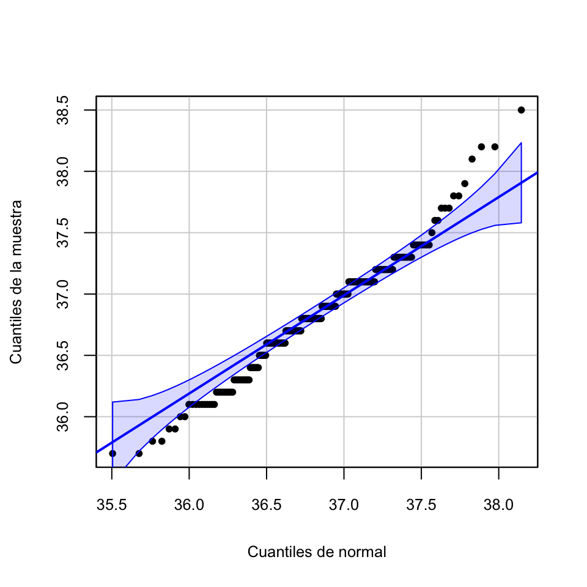
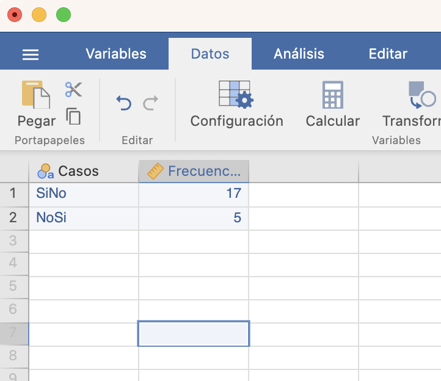
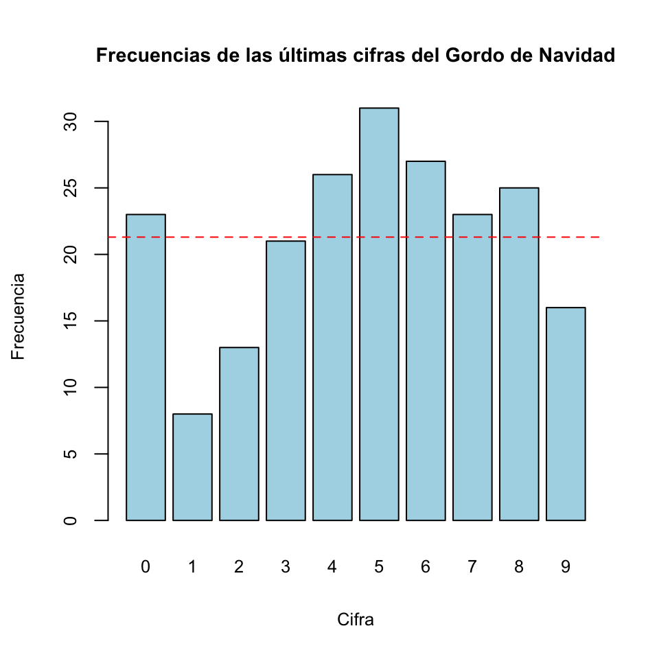
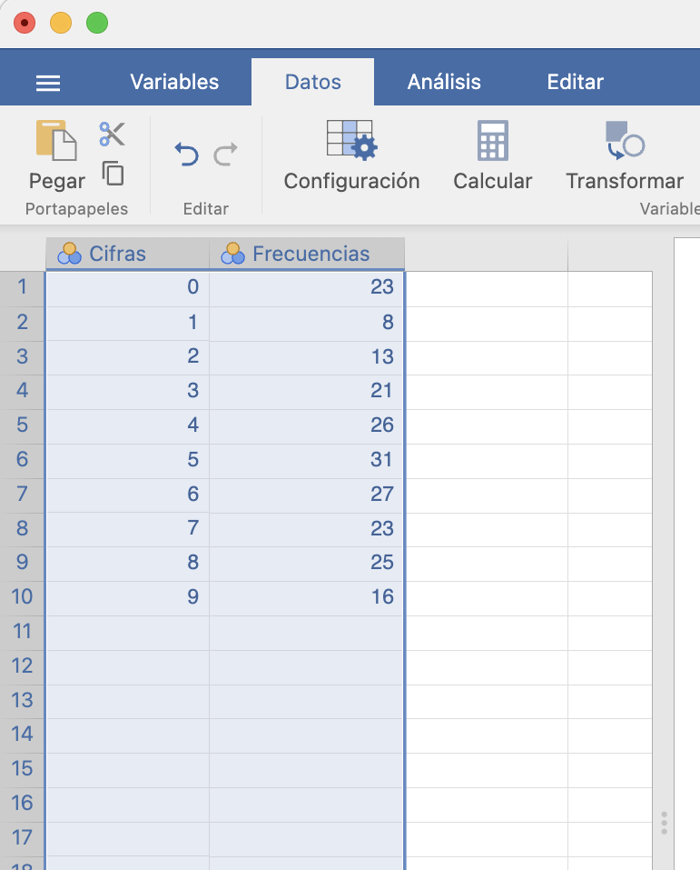
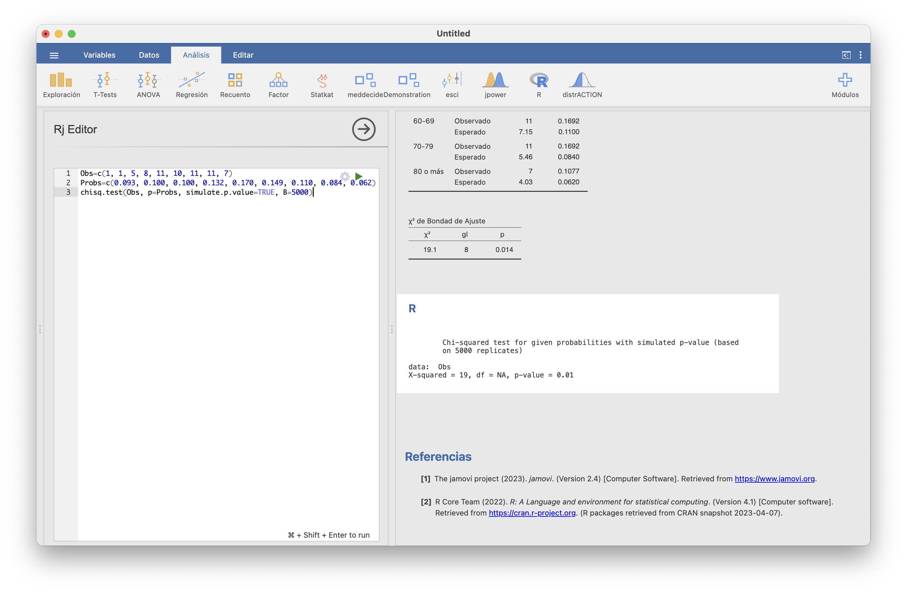
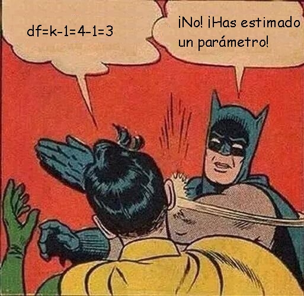
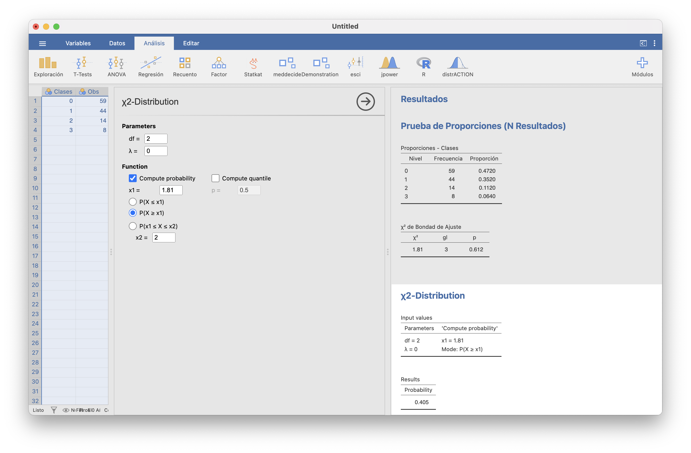
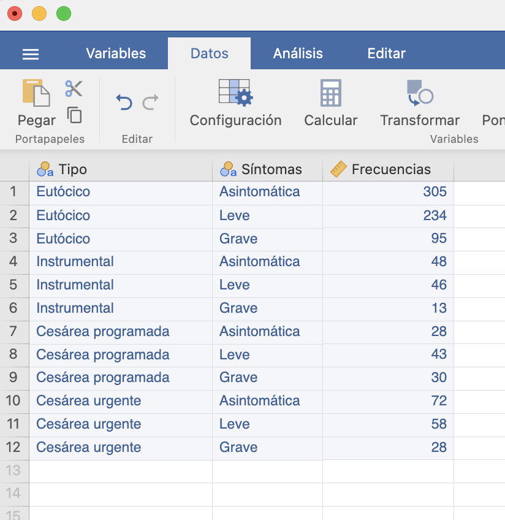

Lección 15 Qué test usar?
En esta lección estudiamos los contrastes de hipótesis más frecuentes sobre medias, varianzas, proporciones, etc. El objetivo principal es, para cada tipo de contraste, explicar qué tests se pueden usar. Para la mayoría de estos tests no vamos a explicar las fórmulas de los estadísticos de contraste o intervalos de confianza, solo qué test usar en cada situación, cómo efectuarlos con JAMOVI y cómo interpretar los resultados.
15.1 Contrastes para medias
15.1.1 Contrastes para una media
Sea \(X\) una variable aleatoria de media \(\mu\). Queremos realizar un contraste sobre \(\mu\), de la forma \[ \left\{\begin{array}{l} H_{0}:\mu=\mu_0\\ H_{1}:\mu \neq\mu_0\text{ o }\mu >\mu_0\text{ o }\mu<\mu_0 \end{array} \right. \] Para ello, medimos \(X\) sobre una muestra aleatoria simple de tamaño \(n\).
15.1.1.1 Test t
Supongamos que estamos en una de las dos situaciones siguientes:
\(X\) es normal; o
\(X\) no es necesariamente normal pero el tamaño \(n\) de la muestra que tomamos es grande (digamos, para fijar ideas, que \(n\geqslant 40\)).
En cualquiera de estas dos situaciones, podemos usar el test t que hemos explicado en la lección anterior para realizar el contraste. JAMOVI lo ofrece en la sección Prueba T en una muestra del módulo Pruebas T (lo que abreviaremos a partir de ahora como Pruebas T/Prueba T en una muestra) de su instalación básica.
Ejemplo 15.1 La temperatura media del cuerpo humano, ¿es el valor comúnmente aceptado de 37o C?
Para empezar, tenemos que traducir esta pregunta a un contraste de hipótesis:
Variable aleatoria poblacional: \(X\): temperatura del cuerpo humano en oC, de media \(\mu\).
Contraste: Nos preguntamos si \(\mu=37^{\mathrm{o}}\) o no, por lo que el contraste es bilateral: \[ \left\{\begin{array}{l} H_{0}:\mu=37\\ H_{1}:\mu\neq 37 \end{array}\right. \]
Para efectuar el contraste, necesitamos una muestra de temperaturas. Vamos a usar las recogidas por P. A. Mackowiak, S. S. Wasserman y M. M. Levine que ya usamos en el Ejemplo 13.4, y que tenemos guardadas en la variable Temperatura de la tabla de datos Temperaturas.txt.
Con JAMOVI, importamos el fichero Temperaturas.txt en una tabla de datos (con Importar especial). Dando una ojeada a la tabla de datos (con el menú Datos), o usando la casilla N de Exploración/Descriptivas, vemos que la muestra es de tamaño 230, más que suficiente para poder usar un test t.
Entonces, abrimos Pruebas T/Prueba T en una muestra; seleccionamos como variable dependiente la Temperatura; entramos 37 en la casilla Valor de la prueba; y marcamos las casillas que se muestran en la figura que sigue. Obtenemos la tabla de la derecha de la figura (observad que JAMOVI llama \(H_a\) a nuestra hipótesis alternativa \(H_1\)):
El intervalo de confianza del 95% para la \(\mu\) se obtiene sumando el valor que se contrasta (en nuestro caso 37) al “intervalo de confianza al 95%” obtenido, por lo tanto es [36.765, 36.886]. Sobre el p-valor, sólo nos dice que es menor que 0.001, no nos da su valor exacto. En resumen, hemos encontrado evidencia estadísticamente significativa de que la temperatura media del cuerpo humano no es de 37o C, y estimamos con un 95% de confianza que está entre 36.8o C y 36.9o C, o sea, entre una y dos décimas por debajo de 37o C. Si esto es clínicamente importante o no para definir “fiebre” ya no es un problema de estadística.
En este caso, si queremos saber qué vale el p-valor (que es lo que en el tema anterior os recomendábamos publicar), tendremos que usar la función t.test de R. Esta función t.test se aplica a un argumento formado por:
- el vector que contiene la muestra;
- el parámetro
muigualado al valor que contrastamos; - el paràmetro
alternativeque indica el tipo de contraste, igualándolo a"two.sided"(para contrastes bilaterales, es decir, con \(\neq\)),"less"(\(<\)) o"greater"(\(>\)); no os olvidéis de las comillas en los valores de este parámetro; - el parámetro
conf.levelque indica el nivel de confianza \(1-\alpha\), en nuestro caso 0.95, que corresponde a \(\alpha=0.05\) (como este es el valor por defecto de este parámetro, no es necesario especificarlo).
JAMOVI ha importado el fichero Temperaturas.txt en una tabla de datos que ha llamado data. El código siguiente, ejecutado en la ventana de R/Rj Editor, define un vector llamado Temps con la variable Temperatura de data y efectua el test t deseado:

El resultado contiene:
- El p-valor (
p-value) del contraste: 3·10-8 - El intervalo de confianza del 95% (
95 percent confidence interval): va de 36.77o C a 36.89o C - La media muestral (
mean of x): 36.83
15.1.1.2 Test no paramétrico
Si no podemos suponer que la variable aleatoria de interés sea normal y la muestra es pequeña, no podemos usar un test t. Entonces, hay que usar algún test no paramétrico que no requiera de la normalidad de la variable poblacional. El recomendado en este caso es el Test de Wilcoxon, aunque conviene tener presente que, en el fondo, este test compara medianas y no medias. Con JAMOVI, hay que marcar la casilla Rangos de Wilcoxon en vez de t de Student en Pruebas T/Prueba T en una muestra:

Con R se usa la función wilcox.test, con la misma sintaxis que t.test salvo que, si eso, hay que indicar con conf.int=TRUE que queremos el intervalo de confianza para la temperatura media (en realidad, este intervalo, y el de JAMOVI, es para la pseudomediana: la mediana de las medias aritméticas de pares independientes de temperaturas, que coincide con la media si la distribución es simétrica), ya que por defecto no lo da:

15.1.2 Inciso: tests de normalidad
Muchos tests, como por ejemplo los tests t cuando las muestras son pequeñas, requieren que las variables poblacionales sea normales para que las conclusiones sean válidas. Para poder decidir si podemos aceptar o no que la variable poblacional es normal, se usa un contraste de normalidad, con hipótesis nula \[ H_0: \text{Esta muestra proviene de una variable aleatoria normal} \] e hipótesis alternativa \[ H_1: \text{No es verdad que esta muestra provenga de una variable aleatoria normal} \]
Hay muchos tests que se pueden usar para efectuar este contraste. Por ejemplo, tras instalar el módulo moretests (que añade funcionalidades a los módulos básicos), cuando marcamos la casilla Prueba de normalidad al realizar algún test t, JAMOVI realiza tres tests de normalidad: el de Shapiro-Wilk, el de Kolmogorov-Smirnov y el de Anderson-Darling:

Os recomendamos que, en caso de disparidad de conclusiones según los p-valores (como pasa en nuestro ejemplo, donde el p-valor del test de Kolgomorov-Smirnov es mayor que 0.1 y los otros dos son 0.003) os quedéis con la conclusión del test de Shapiro-Wilk, que es el más fiable (el test de Kolmogorov-Smirnov es el más conocido, pero no es bueno detectando diferencias con la normal en las colas; el test de Anderson-Darling resuelve este problema, pero en muestras muy grandes tiende a dar muchos falsos positivos). El test de Shapiro-Wilk también está disponible en Exploración/Descriptivas. Con R se efectua con la función shapiro.test aplicado a la muestra.
Así pues, como vemos, en nuestro ejemplo podemos rechazar que la muestra de temperaturas provenga de una variable normal. Esto no afecta a la validez de la conclusión del test t, porque la muestra era muy grande.
La conclusión de un test de normalidad se puede ilustrar con algún gráfico que muestre si la muestra se ajusta o no a lo que sería de esperar si la distribución poblacional fuera normal. Por ejemplo, un histograma superponiendo la densidad de la normal de media y desviación típicas estimadas con la muestra. Otro de los gráficos más usados en este contexto son los q-q-plots.
Un q-q-plot de una muestra y una distribución teórica concreta (por ejemplo, una normal \(N(\mu,\sigma)\)) es el gráfico de los llamados q-q-puntos: los puntos de la forma \[ (q\text{-cuantil de la distribución téorica},\ q\text{-cuantil de la muestra}), \] para varios valores de \(q\). Si la muestra proviene de la distribución teórica, es de esperar que el q-cuantil de la muestra sea muy parecido al q-cuantil de la distribución y por lo tanto que estos q-q-puntos estén cerca de la diagonal principal \(y=x\).
JAMOVI dibuja un q-q-plot marcando la casilla Gráfica Q-Q en cualquier prueba t o en Exploración/Descriptivas.

La función qqPlot del paquete car de Rproduce unos q-q-plots más adecuados, que además muestran una “región de confianza del 95%”, con el significado usual de nivel de confianza (para el 95% de las muestras de la distribución, los q-q-plot caen dentro de esta región; por lo tanto, si nuestro q-q-plot sale fuera de esta región, tenemos evidencia de que la muestra no proviene de la distribución teórica). La sintaxis para usarla es la que sigue (cambiad Temps por la muestra de la que queráis dibujar el q-q-plot)
library(car)
qqPlot(Temps, distribution="norm", mean=mean(Temps), sd=sd(Temps),
ylab="Cuantiles de la muestra", xlab="Cuantiles de normal",
pch=20, id=FALSE)
La existencia de muchos q-q-puntos fuera de la franja de confianza nos vuelve a aportar evidencia de que la muestra de temperaturas no se ajusta a una distribución normal.
15.1.3 Contrastes para dos medias
Sean ahora \(X_1\) y \(X_2\) dos variables aleatorias de medias \(\mu_1\) y \(\mu_2\), respectivamente. Queremos compararlas, mediante un contraste de la forma \[ \left\{\begin{array}{l} H_{0}:\mu_1=\mu_2\\ H_{1}:\mu_1 \neq\mu_2\text{ o }\mu_1 >\mu_2\text{ o }\mu_1<\mu_2 \end{array} \right. \] Para ello, medimos \(X_1\) sobre una muestra aleatoria simple de tamaño \(n_1\), y \(X_2\) sobre una muestra aleatoria simple de tamaño \(n_2\).
15.1.3.1 Tests t
Supongamos que estamos en una de las dos situaciones siguientes:
\(X_1,X_2\) son ambas normales; o
\(X_1,X_2\) no son necesariamente ambas normales pero los tamaños \(n_1,n_2\) de las muestras son ambos grandes (digamos, para fijar ideas, que \(n_1,n_2\geqslant 40\)).
Si se cumple alguna de estas dos condiciones, podemos usar un test t, basado en un estadístico de contraste \(T\) adecuado con distribución t de Student. Los estadísticos de contraste concretos y los grados de libertad de su distribución t de Student son los que dimos al hablar de intervalos de confianza para la diferencia de dos medias en el tema anterior, y dependen de las mismas condiciones que comentábamos allí:
De si las dos muestras son:
independientes: hemos medido \(X_1\) y \(X_2\) sobre dos muestras aleatorias simples obtenidas de manera independiente la una de la otra; o
emparejadas: hemos medido \(X_1\) y \(X_2\) sobre los individuos de una misma muestra aleatoria simple o hay un emparejamiento natural entre los sujetos de las dos muestras.
- Cuando las muestras son independientes, la prueba concreta a efectuar también depende de si las variables poblacionales \(X_1\) y \(X_2\) tienen la misma varianza o no, que en principio se ha de decidir con otro contraste.
Todos estos tests t están implementados en la función t.test de R y en el módulo Pruebas T de JAMOVI.
Ejemplo 15.2 La temperatura media de las hombres, ¿es menor que la de las mujeres?
Traducimos esta pregunta en un contraste de hipótesis:
Variables aleatorias poblacionales:
- \(X_m\): temperatura de un hombre (M) en oC, de media \(\mu_f\)
- \(X_f\): temperatura de una mujer (F) en oC, de media \(\mu_f\)
Contraste: Nos preguntamos si \(\mu_m\) es menor que \(\mu_f\) \[ \left\{\begin{array}{l} H_{0}:\mu_m=\mu_f\\ H_{1}:\mu_m< \mu_f \end{array}\right. \]
Necesitamos una muestra de temperaturas de hombres y de mujeres. La tabla de datos Temperaturas.txt que hemos usado en los ejemplos anteriores contiene una variable Sexo con el sexo de los sujetos: M para hombres y F para mujeres. La muestra fue transversal, así que las muestras de hombres y mujeres son independientes (las que salieron en la muestra global).
Con JAMOVI, tras importar el fichero Temperaturas.txt en una tabla de datos, calculamos los tamaños de ambas muestras con la casilla N de Exploración/Descriptivas, seleccionando como variable dependiente la Temperatura y como variable de agrupación el Sexo. Aprovechamos para calcular los estadísticos básicos de cada muestra y dibujar sus boxplot:
Vemos que las temperaturas de las mujeres (F), y en particular su media y su mediana, son ligeramente mayores que las de los hombres (M). Como las muestras de mujeres y hombres son lo bastante grandes (116 y 114 sujetos, respectivamente), podemos usar un test t para realizar el contraste.
Para ello, usamos Pruebas T/Prueba T para muestras independientes y seleccionamos de nuevo como variable dependiente la Temperatura y como variable de agrupación el Sexo. Como en la variable Sexo las mujeres son F y los hombres M y JAMOVI los va a tomar ordenados alfabéticamente, la hipótesis alternativa tiene que ser Grupo 1 > Grupo 2, es decir, con las notaciones que usamos, \(\mu_f>\mu_m\).
En esta ventana, la casilla t de Student corresponde al test suponiendo varianzas poblacionales iguales y la casilla t de Welch al test suponiendo varianzas poblacionales diferentes. Vamos a efectuar los dos tests de golpe, y cruzaremos los dedos para que den la misma conclusión:

En ambos casos el p-valor es (redondeado) 0.005, muy pequeño. Así, pues, hemos obtenido evidencia estadísticamente significativa de que los hombres tienen una temperatura corporal media inferior a la de las mujeres. Además, ambos intervalos de confianza del 95% para \(\mu_f-\mu_m\) van de alrededor de 0.056 a \(\infty\) (Inf), por lo que tenemos un 95% de confianza de que la temperatura corporal media es 6 centésimas de grado mayor en las mujeres que en los hombres. La diferencia de las medias muestrales \(\overline{X}_f-\overline{X}_m\) ha sido 0.155o C, es decir, la media muestral de temperaturas de mujeres ha sido 0.16o C mayor que en los hombres.
¿Qué pasaría si los tests suponiendo varianzas iguales y diferentes hubieran dado resultados diferentes? En este caso tendríamos que decidir qué conclusion nos creemos, decidiendo si podemos aceptar o rechazar que las varianzas poblacionales sean iguales o no. Podéis contrastar la igualdad de varianzas en esta misma ventana marcando la casilla Test de homogeneidad, que efectua el contraste con hipótesis nula que las dos varianzas poblacionales son iguales e hipótesis alternativa que son diferentes. Con el módulo moretests instalado, da el resultado de dos tests: el de Levene y el test F (Variance ratio). Ya volveremos sobre ellos en la próxima sección. En todo caso, como su p-valor es grande, aquí aceptaríamos que las dos varianzas poblacionales son iguales.
Si preferís usar la función t.test, hay que entrar como argumentos:
Los vectores que contienen la muestra de \(X_1\) y la muestra de \(X_2\).
El tipo de contraste, que se especifica con el parámetro
alternativecomo en el caso de una sola media.El tipo de muestras, que se especifica igualando el parámetro
pairedaFALSEsi son independientes o aTRUEsi son emparejadas.En caso de muestras independientes, si las varianzas son iguales o diferentes, que se especifica igualando el parámetro
var.equalaTRUEo aFALSE, respectivamente.El nivel de confianza, que se especifica con el parámetro
conf.levelcomo en el caso de una sola media y no hace falta si es 0.95.
El código siguiente define vectores TempsH y TempsM con las temperaturas de los hombres y las mujeres de esta tabla, y efectua los tests t suponiendo que las varianzas son iguales y que son diferentes, respectivamente

15.1.3.2 Tests no paramétricos
Si no podemos suponer que las variables aleatorias de interés sean normales y si alguna muestra es pequeña, hay que usar algún test no paramétrico. Para contrastes de dos medias, los recomendados son:
Test de Wilcoxon para muestras emparejadas (que, recordad, se traduce en un contraste sobre la media de las diferencias, y en los contrastes de una media ya recomendábamos el test de Wilcoxon).
Test de Mann-Whitney para muestras independientes.
En JAMOVI se marcan las casillas rangos de Wilcoxon o U de Mann-Whitney, según corresponda.
Con R, ambos tests se calculan con la función wilcox.test, con una sintaxis idéntica a la de t.test para dos muestras excepto que no dispone del parámetro var.equal (ya que ahora no nos interesa lo más mínimo saber si las variables tienen varianzas iguales o diferentes en el caso de contrastes de dos medias con muestras independientes) y hay que usar el parámetro conf.int=TRUE si se quiere un intervalo de confianza (para la diferencia de las pseudomedianas de \(X_1\) y \(X_2\)).
Temperatura según el Sexo. Marcando la casilla Shapiro-Wilk, obtenemos los p-valores del test de Shapiro-Wilk tanto para F como para M. Ambos son menores que 0.05, así que podemos rechazar que las muestras provengan de distribuciones normales.

Veamos otro ejemplo.
Ejemplo 15.3 Desayunar salvado de avena (oat bran) en lugar de copos de maíz (corn flakes), ¿ayuda a reducir el nivel de colesterol?
Planteémoslo como un contraste de hipótesis. Las variables aleatorias poblacionales de interés son:
- \(X_{ob}\): nivel de colesterol al consumir salvado de avena, de media \(\mu_{ob}\)
- \(X_{cf}\): nivel de colesterol al consumir copos de maíz, de media \(\mu_{cf}\)
El contraste que queremos realizar es \[ \left\{\begin{array}{l} H_{0}:\mu_{ob}=\mu_{cf}\\ H_{1}:\mu_{ob}< \mu_{cf} \end{array}\right. \]
Para hacerlo, vamos a usar los datos obtenidos por J. Anderson et al en su estudio “Oat-bran cereal lowers serum total and LDL cholesterol in hypercholesterolemic men” (The American Journal of Clinical Nutrition 52 (1990), pp. 495-499). Se trata de un ensayo clínico cruzado sobre 14 individuos. A cada uno de ellos se le asignó uno de los dos desayunos de manera aleatoria y lo tomaron durante 15 días. Al final de este periodo, se les midió el nivel de colesterol en sangre. Pasado un mes de descanso, cada participante desayunó durante 15 días el otro producto, y al final se los volvió a medir el nivel de colesterol en sangre. Tenemos los niveles de colesterol que obtuvieron en la tabla de datos oatbran.txt, donde están medidos en milimoles por litro (mmol/l), así que esta será la unidad que tomamos en las variables poblacionales.
Con JAMOVI, importamos el fichero oatbran.txt en una tabla de datos. Como las muestras son pequeñas (de tamaño 14), si queremos aplicar un test t necesitamos poder aceptar que provienen de variables normales. Vamos a Exploración/Descriptivas, escogemos ambas variables, CORNFLK y OATBRAN, y marcamos el test de Shapiro-Wilk (y, ya que estamos, las gráficas Q-Q):

Ambos p-valores son muy grandes, así que vamos a aceptar que ambas muestras provienen de variables normales y usaremos un test t de dos medias.
En este caso, como las muestras son emparejadas (hemos medido las dos variables aleatorias sobre los mismos individuos), hay que elegir Pruebas T/Prueba t para muestras emparejadas. Cuidado con la hipótesis alternativa: como JAMOVI toma como primera variable CORNFLK y segunda variable OATBRAN y nuestra hipótesis alternativa es que los oat bran reducen el nivel de colesterol respecto de los corn flakes, hemos de marcar “Medida 1 > Medida 2”.

Obtenemos un p-valor de 0.003. Por lo tanto, hemos encontrado evidencia estadísticamente significativa de que desayunar salvado reduce el nivel medio de colesterol respecto de desayunar copos de maíz. El intervalo de confianza del 95% para \(\mu_{cf}-\mu_{ob}\) va de 0.163 a \(\infty\). Por lo tanto, tenemos un 95% de confianza en que desayunar salvado reduce en al menos 0.163 mmol/l el nivel medio de colesterol respecto de desayunar copos de maíz.
¿Y si no quisiéramos, o no pudiéramos, suponer que las muestras provienen de distribuciones normales? Entonces usaríamos un test de Wilcoxon:

El p-valor da 0.006, por lo que la conclusión es la misma.
Típica pregunta de MIR (esta, de 2017):
El grosor del pliegue subcutáneo de grasa a nivel del tríceps se utiliza a veces para evaluar la cantidad de grasa corporal. Esta variable no se distribuye normalmente en las poblaciones. Queremos comparar el valor medio de esta variable en dos poblaciones que suponemos presentan distinta condición nutricional. La prueba estadística más adecuada para contrastar la hipótesis es:
- La prueba de Mann-Whitney.
- La prueba t de Student.
- El cálculo del coeficiente de correlación de Pearson.
- La prueba F de Snedecor.
15.1.4 Contrastes para más de dos medias
Sean ahora \(X_1,X_2,\ldots, X_k\) \(k\) variables aleatorias de medias \(\mu_1,\mu_2,\ldots,\mu_k\) y desviaciones típicas \(\sigma_1,\sigma_2,\ldots,\sigma_k\), respectivamente. Normalmente, se tratará de una misma variable aleatoria definida sobre \(k\) poblaciones diferentes.
Nos preguntamos si es verdad o no que estas \(k\) variables tienen la misma media. Es decir, planteamos el contraste \[ \left\{\begin{array}{l} H_{0}:\mu_1=\mu_2=\cdots=\mu_k\\ H_{1}:\text{No es verdad que } \mu_1=\mu_2=\cdots=\mu_k \end{array} \right. \] Para ello, medimos cada \(X_i\) sobre una muestra aleatoria simple de tamaño \(n_i\).Ejemplo 15.4 En un estudio (publicado en Personality and Social Psychology Bulletin 21 (1995), pp. 207-214) se quiso determinar si la benevolencia con la se juzga a una persona depende de cómo sonríe.
Para ello se seleccionaron 136 personas, que se dividieron al azar en 4 grupos de 34. A las personas de cada grupo se les pasó un dosier donde se acusaba a un hombre de una falta grave (en un contexto universitario) y, tras estudiarlo, se les pusieron cinco preguntas sobre la culpabilidad del acusado y el castigo que se merecía. A partir de las respuestas de cada sujeto, se calculó un “índice de benevolencia” de cómo había juzgado al acusado.
Los dosieres eran idénticos, excepto la foto del acusado: mismo hombre, pero diferente tipo de sonrisa:

Tenemos los índices obtenidos en el fichero smiles.txt. Veamos sus estadísticos básicos y un diagrama de caja.

Vemos que la sonrisa neutra ha generado una menor benevolencia y la falsa, mayor. Queremos determinar si las diferencias son lo bastante grandes para aportar evidencia que la benevolencia depende de la sonrisa.
En este caso tenemos una variable aleatoria, el índice de benevolencia con el que se juzga al acusado, definida sobre cuatro subpoblaciones definidas por el tipo de sonrisa en la foto. Llamemos \(\mu_s\), \(\mu_f\), \(\mu_c\) y \(\mu_n\) a sus medias: los índices de benevolencia medios con los que se juzga el dosier cuando la sonrisa es sincera, falsa, compungida o neutra, respectivamente.
Entonces, queremos realizar el contraste \[ \left\{ \begin{array}{l} H_0 : \mu_s=\mu_{f}=\mu_{c}=\mu_{n} \\ H_1 : \mbox{Hay algún par de sonrisas }i,j\mbox{ tales que } \mu_i \neq \mu_j \end{array} \right. \]
Un posible modo de resolver este contraste sería realizar los seis contrastes de pares de medias \(\mu_i=\mu_j\) contra \(\mu_i\neq \mu_j\), pero esto aumenta la probabilidad de error si no ajustamos los p-valores. Y tenemos que comparar todas las medias dos a dos, porque podría pasar, por ejemplo, que no pudiéramos rechazar que \(\mu_n= \mu_s\) ni que \(\mu_s= \mu_f\), pero sí que pudiéramos rechazar que \(\mu_n= \mu_f\).
Lo que queremos es un test que nos diga en un solo paso si todas las medias son iguales o no. La técnica más usual es el Análisis de la Varianza (ANOVA, del inglés ANalysis Of VAriance). Esta técnica se puede aplicar bajo diferentes diseños experimentales: por ejemplo, según cuántos factores usemos para separar la población en subpoblaciones (uno o varios) o según cómo escojamos las muestras (independientes o emparejadas).
La idea básica del ANOVA es que tenemos evidencia de que no todas las medias poblacionales son iguales si la variabilidad de las medias poblacionales es muy grande en relacion a la variabilidad total de los datos obtenidos: de ahí la VAriancia en el nombre. Esta variabilidad relativa se mide mediante un estadístico de contraste adecuado que, si todas la medias poblacionales son iguales y se satisfacen las condiciones adecuadas, tiene una distribución conocida (llamada F de Fisher-Snedecor: es la distribución de un cociente de dos variables \(\chi^2\) independientes, y sus parámetros son los grados de libertad de estas dos distribuciones \(\chi^2\)). Por lo tanto podemos usar esta distribución para calcular un p-valor que nos dé lo improbablemente grande que es la variabilidad de las medias muestrales si las medias poblacionales fueran todas iguales.
15.1.4.1 Diseño ANOVA de un factor
En un estudio de diseño ANOVA de un factor (One way ANOVA):
Usamos un solo factor para clasificar la población en subpoblaciones.
Tomamos una muestra aleatoria simple de la variable aleatoria sobre cada subpoblación, independientes unas de otras.
El Ejemplo 15.4 es de tipo ANOVA de 1 factor: el factor que usamos para clasificar los índices de benevolencia es el tipo de sonrisa en la foto, y hemos tomado una muestra de índices de benevolencia para cada tipo de sonrisa, independientes las unas de las otras porque hemos asignado las fotos al azar a los participantes.
ANOVA de un factor
Supongamos que tenemos que realizar una comparación de medias en un estudio de diseño ANOVA de 1 vía. Si se cumple además que:
Cada una de las \(k\) variables aleatorias de las que hemos tomado muestras sigue una ley normal
Homocedasticidad o homogeneidad: Todas estas variables tienen la misma varianza, \(\sigma^2\).
Entonces podemos usar un test ANOVA. JAMOVI ofrece el ANOVA de 1 vía en ANOVA/ANOVA de Un Factor.
Ejemplo 15.5 Sigamos con el Ejemplo 15.4. Ya hemos cargado la tabla. Efectuamos los tests de Shapiro-Wilks (separando la variable benevolencia según el factor sonrisa) y obtenemos los 4 p-valores por encima de 0.05, así que vamos a aceptar que para los cuatro tipos de sonrisas los índices de benevolencia se ajustan a distribuciones normales.
Abriendo entonces ANOVA/ANOVA de Un Factor, separamos de nuevo la variable dependiente benevolencia según el factor sonrisa, marcamos la Prueba de homogeneidad para saber si podemos aceptar o no que las varianzas poblacionales son todas iguales, y como el p-valor de ambos tests es grande, marcamos la casilla Asumir iguales (Fisher), que efectua el test ANOVA.
El p-valor es 0.018, por lo que obtenemos evidencia estadística de que al menos un par de medias son diferentes.
También podéis usar ANOVA/ANOVA para efectuar un ANOVA de un factor, mucho más rico en opciones (pero para el nivel de este curso casi todas innecesarias).
Alternativas
El test ANOVA de Fisher es bastante robusto a una ligera desviación de la normalidad de las muestras, pero deja estrepitosamente de ser válido si las varianzas poblacionales no son iguales.
Si las variables poblacionales son normales, pero no podemos aceptar que tengan todas la misma varianza, lo recomendado es usar una variante llamada ANOVA de Welch, y que en JAMOVI se ejecuta marcando No asumir iguales (Welch) en lugar de Asumir iguales (Fisher).
Otra posibilidad es usar el test no paramétrico de Kruskal-Wallis, que extiende a más de dos medias el test de Mann-Whitney. JAMOVI lo ofrece en ANOVA/No paramétrico/ANOVA de Un Factor: Kruskall-Wallis.
Tests post hoc
Si hemos rechazado la hipótesis nula \(H_0:\mu_1=\cdots =\mu_k\), nos puede interesar estimar qué parejas de niveles tienen medias diferentes. La manera más popular es realizar los \(\binom{k}{2}\) contrastes \[ \left\{ \begin{array}{ll} H_0 &: \mu_i=\mu_j \\ H_1 &: \mu_i \neq \mu_j \end{array} \right. \] usando un test t adecuado (si las muestras se ajustan a normalidad o son lo bastante grandes) o un test de Mann-Whitney (si no se puede usar un test t para todos los pares de medias). En caso de homogeneidad de varianzas, el test t no es exactamene el que hemos explicado para pares de medias y varianzas iguales porque usa todas las muestras, y no solo las dos involucradas, para estimar el error típico.
Pero hay que ir con cuidado con el nivel de significación global. Como vimos en el tema anterior, si efectuamos muchos contrastes de pares de medias, la probabilidad de cometer un error de tipo I en alguno aumenta, por lo que hay que reducir el nivel de significación con el que los efectuamos o, equivalentemente, ajustar los p-valores. En ANOVA/ANOVA de Un Factor JAMOVI efectua un ajuste por defecto que es más que suficiente para nuestros propósitos. Si queréis usar otros ajustes, por ejemplo el de Bonferroni que mencionábamos en el tema anterior (multiplicar los p-valores por el número de tests), los encontraréis en ANOVA/ANOVA/Pruebas Post Hoc. Normalmente no habrá grandes diferencias en las conclusiones de los tests según el método de ajuste usado.
Ejemplo 15.6 Seguimos con nuestro ejemplo sobre la benevolencia que suscitan los diferentes tipos de sonrisa. Con un ANOVA de 1 factor hemos obtenido evidencia seignificativa de que hay al menos un par de sonrisas con índices de benevolencia medios diferentes. Vamos a investigar cuáles.
Antes de nada, un gráfico: en ANOVA/ANOVA de Un Factor pedimos que añada “Gráficas Descriptivas”:

Nos da los intervalos de confianza del 95% para las cuatro medias. Observad que todos los pares de intervalos de confianza se solapan salvo dos: el de la sonrisa falsa y el de la sonrisa neutra. Este gráfico nos aporta evidencia de que estas dos medias no son iguales (cada una pertenece a su intervalo de confianza con una confianza del 95%, y estos dos intervalos son disjuntos) y nos indica que los otros pares de medias pueden ser iguales (sus intervalos de confianza no son disjuntos). Esto es solo una indicación gráfica del resultado que tenemos que esperar, pero no nos da el resultado del test con la confianza que deseamos: las conclusiones se basan en que todos los IC 95% aciertan, y la probabilidad de que eso ocurra es menor que 0.95.
Vamos ya a realizar las comparaciones posteriores por parejas. Usamos para ello la ventana ANOVA/ANOVA de Un Factor/Pruebas Post-Hoc. Como hemos aceptado que las variables poblacionales son todas iguales, marcamos Tukey (varianzas iguales):

En la tabla obtenemos la diferencia de medias “fila menos columna” y el p-valor del test para cada par formado por las medias para el tipo de sonrisa de la fila y el de la columna. Los p-valores están ajustados por el mmétodo de Tukey, demasiado complicad para explicarlo aquí, así que tenemos que compararlos directamente con el nivel de significación elegido. Si este es 0.05, observamos que solo obtenemos evidencia de diferencia de medias para el par sonrisa falsa-sonrisa neutra. Para el resto de pares de medias no podemos rechazar que sean iguales. Era lo que esperábamos.
Si quisiéramos usar por ejemplo el ajuste de Bonferroni, tendríamos que efectuar el ANOVA con ANOVA/ANOVA:
Hemos marcado también la columna de p-valores sin ajustar (“p”) y la del ajuste de Tukey para que veáis que el ajuste de Bonferroni consiste en tomar el mínimo de 1 y el resultado de multiplicar el p-valor por 6 (el número total de contrastes de pares de medias) y podáis comparar los valores ajustados de Bonferroni con los de Tukey. La conclusión con los dos tipos de ajuste es la misma.
15.1.4.2 Diseño ANOVA de bloques
Así como el diseño de ANOVA de una vía generaliza a más de dos medias el contraste de igualdad de dos medias con muestras independientes, el ANOVA de bloques generaliza a más de dos medias el contraste de igualdad de dos medias con muestras emparejadas.
Ejemplo 15.7 Hemos querido comparar los efectos de dos analgésicos y un placebo en el tratamiento de la cefalea. Para ello, hemos reclutado 10 enfermos de cefalea y a cada uno le hemos aplicado los tres tratamientos en diferentes episodios de cefalea. El orden de los tratamientos ha sido aleatorio. El efecto de los tratamientos lo cuantificamos mediante el tiempo (en minutos) que tarda en desaparecer una cefalea con el tratamiento.
Los resultados han sido los siguientes: \[ \begin{array}{c|ccc} \text{Sujeto} & \text{Placebo} & \text{Analgésico A}&\text{Analgésico B}\\\hline 1 & 35 & 20 & 22\\ 2 & 40 & 35 & 42\\ 3 & 60 & 50 & 30\\ 4 & 50 & 40 & 35\\ 5 & 50 & 30 & 22 \\ 6 & 52 & 30 & 25\\ 7 & 37 & 22 & 18\\ 8 & 45 & 30 & 28\\ 9 & 40 & 45 & 35\\ 10 & 47 & 40 & 37 \end{array} \]
Si llamamos
\(\mu_P\): Tiempo medio tomando el placebo
\(\mu_A\): Tiempo medio tomando el analgésico A
\(\mu_1\): Tiempo medio tomando el analgésico B
queremos realizar el contraste: \[ \left\{ \begin{array}{l} H_0 : \mu_1 =\mu_2 =\mu_3 \\ H_1 : \mu_1\neq \mu_2\mbox{ o }\mu_1\neq \mu_3\mbox{ o }\mu_2\neq \mu_3 \end{array} \right. \]
Aunque hemos usado un factor para clasificar la población (el tipo de tratamiento), no se trata de un diseño de ANOVA de 1 vía, porque las muestras de cada nivel no son independientes, sino emparejadas. Se trata de un diseño de ANOVA de bloques.
En un experimento con diseño de ANOVA de bloques
Tenemos \(k\) tratamientos que queremos comparar.
Escogemos \(b\) : conjuntos de \(k\) sujetos emparejados (por ejemplo, \(k\) copias del mismo sujeto).
Dentro de cada bloque, asignamos aleatoriamente a cada sujeto un tratamiento, de manera que cada tratamiento se use exactamente una vez dentro de cada bloque.
Por ejemplo, si cada bloque corresponde a un único sujeto, le asignamos los tratamientos en diferentes momentos de tiempo en un orden aleatorio, como hemos hecho en nuestro ejemplo.
El contraste que se quiere realizar es \[ \left\{ \begin{array}{l} H_0 : \mu_{1} =\mu_{2} =\cdots =\mu_{k} \\ H_1 : \mbox{Hay $i,j$ tales que } \mu_{i} \neq \mu_{j} \end{array} \right. \] donde cada \(\mu_{i}\) es la media del tratamiento \(i\)-ésimo
La filosofía del contraste ANOVA es similar al de un factor: la variabilidad de los datos se descompone en la suma de
la variabilidad de las medias muestrales de los tratamientos
la variabilidad de las medias de los bloques
la variabilidad residual debida al azar al escoger las muestras
y se compara la variabilidad de las medias muestrales con la variabilidad residual
Para que las conclusiones de un ANOVA de bloques tengan sentido, ha de pasar que
Las \(k\cdot b\) observaciones sean muestras aleatorias (de tamaño 1) e independientes de las \(k\cdot b\) poblaciones definidas por las medidas que se tomarían para cada combinación de sujeto y tratamiento
Estas \(k\cdot b\) poblaciones son normales y con la misma varianza
No hay interacción entre los bloques y los tratamientos: Para cada par de tratamientos \(i,j\) y para cada par de bloques \(s,t\), la diferencia entre las medias poblacionales de las mediciones para el tratamiento \(i\) y el tratamiento \(j\) en el bloque \(s\) es la misma que en el bloque \(t\).
Ninguna de estas condiciones se puede contrastar, por lo tanto el experimentador ha de decidir si se cumplen o no según su experiencia. Si no se cree que se cumpla (b), puede ser conveniente efectuar un test no paramétrico. Si se cree que puede haber interacción entre los bloques y los tratamientos, es más recomendable usar un ANOVA de 2 factores (véase la siguiente sección).
Podemos efectuar un ANOVA de bloques con JAMOVI en la pestaña ANOVA/ANOVA de Medidas Repetidas. Para ello, tenemos que tener la tabla con los resultados de las mediciones en una tabla de datos con filas los bloques y columnas los tratamientos. Para el ejemplo anterior, la tenemos en el fichero Analgesicos.csv. Tras importarla, comprobad (o especificad) que las variables de los tratamientos son numéricas.
A continuación, en la ventana “Factores de Medidas Repetidas” de **ANOVA/ANOVA de Medidas Repetidas* tenemos que indicar cuántos tratamientos usamos. Como en nuestro ejemplo usamos tres tratamientos, hemos de añadir un “Nivel 3” a los dos que se especifican por defecto. Es una buena idea poner nombres tanto al factor que usamos para clasificar los tratamientos como a sus niveles (clicando encima y reescribiendo)

A continuación, arrastramos las variables de cada tratamiento a su nivel correspondiende en la ventana “Celdas de Medidas Repetidas”:
El p-valor <0.001 nos indica que hay evidencia estadística de diferencia en las eficacias medias de al menos dos tratamientos. Los contrastes post hoc por parejas se efectuan más abajo en la misma pestaña, seleccionando el factor. Se puede también elegir el método de corrección de p-valores.
 Obtenemos evidencia significativa de diferencia entre ambos tratamientos y el placebo, pero no de diferencia entre los dos tratamientos.
Obtenemos evidencia significativa de diferencia entre ambos tratamientos y el placebo, pero no de diferencia entre los dos tratamientos.
El test no paramétrico que generaliza al diseño ANOVA de bloques el test de Wilcoxon es el test de Friedman que se encuentra en la pestaña ANOVA/No Paramétrico/ANOVA de Medidas Repetidas (Friedman). En él solo hay que seleccionar las variables que contienen las mediciones de tratamientos. También se pueden efectuar los tests post hoc por parejas (y no os burléis del “no paramédico” por “no paramétrico” de la versión actual en español, ya lo arreglarán).

15.1.4.3 Diseño ANOVA multifactorial
En un experimento de diseño de ANOVA factorial se usan las combinaciones de niveles de dos o más factores para definir las subpoblaciones para las que comparamos las medias de una variable aleatoria. El caso más sencillo, que es el único que trataremos aquí es el diseño de ANOVA de 2 vías o de 2 factores:
Usamos las combinaciones de niveles de dos factores para definir las subpoblaciones
Para cada pareja de niveles, uno de cada factor, tomamos una muestra aleatoria simple de la subpoblación definida por la combinación de ambos niveles. Estas muestras han de ser independientes las unas de las otras y todas del mismo tamaño \(n\geq 2\).
Ejemplo 15.8 Para contrastar si el nivel de colesterol depende del sexo o la complexión de las personas, se midió el nivel de colesterol (en mg/dL) de 30 personas de cada combinación de sexo (male o female) y complexión (small, medium olarge). Tenemos los datos guardados en el tabla de datos colesterol.csv, con variables chol (el nivel de colesterol), sex (el sexo) y frame (la complexión).

Como en los otros ANOVA, de nuevo se comparan variabilidades.
En un estudio como el de este ejemplo, en realidad nos podemos plantear cuatro preguntas:
¿Hay diferencia en el nivel medio de colesterol según el sexo, teniendo en cuenta la posible influencia de la complexión en el nivel del colesterol?
¿Hay diferencia en el nivel medio de colesterol según la complexión, teniendo en cuenta la posible influencia del sexo en el nivel del colesterol?
¿Hay diferencia en el nivel medio de colesterol según la combinación sexo-complexión?
¿Hay interacción en el nivel medio de colesterol entre el sexo y la complexión (en el sentido de que el efecto de los niveles de un factor se magnifiquen en los del otro factor: por ejemplo, que la diferencia en el nivel medio de colesterol entre hombres y mujeres de complexión grande sea diferente que entre hombres y mujeres de complexión pequeña)?
Formalmente, usamos dos factores \(A\) y \(B\) para clasificar la población sobre la que medimos una variable \(X\). El factor \(A\) tiene \(k\) niveles: \(a_1,\ldots,a_k\). El factor \(B\) tiene \(l\) niveles: \(b_1,\ldots,b_l\). Tomamos para cada par \((a_i,b_j)\) una muestra aleatoria simple de tamaño \(n\), independientes las unas de las otras. Por lo tanto, el número total de observaciones es \(n\cdot k\cdot l\).
Llamemos:
\(\mu_{i\bullet}\): media poblacional de \(X\) para los sujetos del nivel \(a_i\) de \(A\)
\(\mu_{\bullet j}\): media poblacional de \(X\) para los sujetos del nivel \(b_j\) de \(B\)
\(\mu_{ij}\): media poblacional de \(X\) para los sujetos que son simultáneamente del nivel \(a_i\) de \(A\) y del nivel \(b_j\) de \(B\)
Planteamos los cuatro contrastes siguientes:
Contraste de medias del factor \(A\): Contrastamos si hay diferencias entre los niveles del factor \(A\): \[ \left\{ \begin{array}{l} H_0 : \mu_{1\bullet}=\mu_{2\bullet}=\cdots =\mu_{k\bullet} \\ H_1 : \mbox{Hay $i,i'$ tales que $\mu_{i\bullet}\neq \mu_{i'\bullet}$} \end{array} \right. \]
Contraste de medias del factor \(B\): Contrastamos si hay diferencias entre los niveles del factor \(B\): \[ \left\{ \begin{array}{l} H_0 : \mu_{\bullet 1}=\mu_{\bullet 2}=\cdots =\mu_{\bullet l} \\ H_1 : \mbox{Hay $j,j''$ tales que $\mu_{\bullet j}\neq \mu_{\bullet j'}$} \end{array} \right. \]
Contraste de medias de la combinación \(A\)-\(B\): Contrastamos si hay diferencias entre las parejas (nivel de \(A\), nivel de \(B\)): \[ \left\{ \begin{array}{l} H_0 : \mbox{Para todos $i,j,i',j'$, $\mu_{ij}=\mu_{i'j'}$} \\ H_1 : \mbox{Hay $i,j,i',j'$ tales que $\mu_{ij}\neq \mu_{i'j'}$} \end{array} \right. \]
Contraste de interacción: Contrastamos si hay interacción entre los niveles de \(A\) y \(B\) \[ \left\{ \begin{array}{l} H_0 : \mbox{No hay interacción entre ningún par de niveles} \\ H_1 : \mbox{Hay interacción entre algún par de niveles} \end{array} \right. \]
Para que las conclusiones del ANOVA de 2 vías tengan sentido, es necesario que:
Las observaciones para cada combinación de niveles constituyan muestras aleatorias simples independientes, cada una de tamaño \(n\), de las \(k\cdot l\) subpoblaciones definidas por las combinaciones de un nivel de \(A\) y un nivel de \(B\)
La restricción de \(X\) a cada una de estas \(k\cdot l\) poblaciones es normal y todas tienen la misma varianza
En JAMOVI, los ANOVA factoriales, y en particular el de 2 vías, se pueden efectuar en la pestaña ANOVA/ANOVA, seleccionando la variable que contiene los valores como “Variable dependiente” y las variables correspondientes a los factores como “Factores Fijos”, y marcando la casilla “Modelo Global”:
En esta tabla:
La fila “frame” corresponde al contraste de medias del factor frame: como el p-valor es 0.066, con nivel de significación 0.05 no tenemos evidencia estadística de que el nivel medio de colesterol varíe con la complexión
La fila “sex” corresponde al contraste de medias del factor sex: como el p-valor es 0.332, no tenemos evidencia estadística de que el nivel medio de colesterol varíe con el sexo
La fila “Modelo Global” corresponde al contraste de medias de la combinación sex-frame: como el p-valor es 0.26, no tenemos evidencia estadística de que el nivel medio de colesterol varíe con la combinación de sexo y complexión
La fila “frame*sex” corresponde al contraste de interacción: como el p-valor es 0.958, no tenemos evidencia estadística de que haya interaccón entre la influencia del sexo y la complexión en el nivel medio de colesterol.
Si hubiéramos encontrado evidencia de diferencias entre medias para algún factor, podríamos efectuar los contrastes post-hoc por parejas en la sección “Pruebas post-hoc”.

15.2 Contrastes para varianzas
15.2.1 Contrastes bilaterales para dos varianzas
Sean \(X_1\) y \(X_2\) dos variables aleatorias de desviaciones típicas \(\sigma_1\) y \(\sigma_2\). Queremos realizar el contraste \[ \left\{\begin{array}{l} H_{0}:\sigma_1=\sigma_2\\ H_{1}:\sigma_1\neq \sigma_2 \end{array} \right. \] o, equivalentemente, \[ \left\{\begin{array}{l} H_{0}:\sigma_1^2=\sigma_2^2\\ H_{1}:\sigma_1^2\neq \sigma_2^2 \end{array} \right. \]
Si \(X_1\) y \(X_2\) son las dos normales, podemos usar el test F. Este test usa como estadístico de contraste el cociente de varianzas muestrales, \(\widetilde{S}^2_{X_1}/\widetilde{S}^2_{X_2}\), que, si \(\sigma_1=\sigma_2\), tiene distribución F de Fisher-Snedecor, de ahí el nombre del test.
Con JAMOVI, se realiza marcando la casilla Test de homogeneidad al llevar a cabo un test t de dos muestras independientes con el módulo moretests instalado: es el resultado de la fila “Variance ratio”. Con R se realiza con la función var.test aplicada a las dos muestras y además os da un intervalo de confianza para el cociente \(\sigma_1^2/\sigma_2^2\). La ventaja de var.test es que también permite efectuar contrastes unilaterales, especificando el parámetro alternative.
El test F no és válido a poco que las variables \(X_1\) o \(X_2\) difieran de normales, incluso aunque las muestras sean grandes. Si no podemos aceptar que \(X_1\) y \(X_2\) sean normales, es necesario usar un test no paramétrico. JAMOVI usa el test de Levene, que lleva a cabo marcando la mencionada casilla Test de homogeneidad.
Ya hemos visto un ejemplo de contraste bilateral de varianzas en el Ejemplo 15.2.
15.2.2 Contrastes de homogeneidad para más de dos varianzas
Sean ahora \(X_1,X_2,\ldots,X_k\) \(k\) variables aleatorias, de desviaciones típicas \(\sigma_1,\sigma_2,\ldots,\sigma_k\) respectivamente.. Queremos realizar el contraste \[ \left\{\begin{array}{l} H_{0}:\sigma_1=\sigma_2=\cdots=\sigma_k\\ H_{1}: \text{Hay algún par }i,j\text{ tal que }\sigma_1\neq \sigma_2 \end{array} \right. \] o, equivalentemente, \[ \left\{\begin{array}{l} H_{0}:\sigma_1^2=\sigma_2^2=\cdots=\sigma_k^2\\ H_{1}: \text{Hay algún par }i,j\text{ tal que }\sigma_1^2\neq \sigma_2^2 \end{array} \right. \]
Si todas las variables son normales, lo mejor es usar el test de Bartlett, pero si alguna muestra no se ajusta a una variable normal, conviene usar algún test no paramétrico. JAMOVI ofrece el test de Levene, que también sirve para dos medias, ya está bien.
Como hemos visto en la sección anterior, ambos tests se pueden efectuar marcando la casilla Prueba de homogeneidad al hacer un ANOVA de un factor con ANOVA/ANOVA de Un Factor y el módulo moretests instalado.
15.3 Contrastes para proporciones
15.3.1 Contrastes para una proporción
Sea \(X\) una variable aleatoria Bernoulli de parámetro \(p\). Queremos realizar un contraste \[ \left\{\begin{array}{l} H_{0}:p=p_0\\ H_{1}:p\neq p_0\text{ o }p> p_0\text{ o }p< p_0 \end{array} \right. \]
Tomamos una muestra aleatoria simple de \(X\) de tamaño \(n\).
15.3.1.1 Test binomial
Como vimos en el tema anterior, siempre podemos usar el test binomial, que usa que si \(p=p_0\), el número de éxitos en una m.a.s. de tamaño \(n\) tiene distribución \(B(n,p_0)\). Para llevarlo a cabo con JAMOVI, podemos usar Frecuencias/Prueba binomial.
Ejemplo 15.9 La muestra de personas recogidas en la tabla de datos de temperaturas usada hasta ahora fue transversal, sin números prefijados de hombres y mujeres. Su composición en sexos, ¿aporta evidencia estadística de que la proporción de mujeres en la población es estrictamente mayor que la de hombres?
Sea \(p\) la proporción de mujeres en la población. Podemos traducir la pregunta planteada en el contraste
\[ \left\{ \begin{array}{l} H_0:p=0.5\\ H_1:p>0.5 \end{array} \right. \]
La ventana del test binomial para este contraste con JAMOVI es:
JAMOVI ha realizado el test binomial para las mujeres (F) y para los hombres (M): el que nos interesa es el primero. Con un p-valor 0.474 y un intervalo de confianza para \(p\) de 0.448 a 1, no podemos rechazar que p sea 0.5.
Si no disponemos de la tabla de datos sino solo de las frecuencias, tenemos que entrarlas como una variable en una tabla de datos:

y al cargar la variable en la ventana Frecuencias/Prueba binomial, marcar la casilla Los valores son frecuencias:

15.3.1.2 Test aproximado
Si el tamaño \(n\) de la muestra es grande (digamos \(\geqslant 40\)), podemos usar el test aproximado basado en que, si \(H_0: p=p_0\) es verdadera y \(n\) es grande, por el Teorema Central del Límite \[ \frac{\widehat{p}_X-p_0}{\sqrt{\frac{\widehat{p}_X(1-\widehat{p}_X)}{n}}}\approx N(0,1) \]
Este test es mucho más popular que el binomial, porque se puede efectuar “a mano” con una simple calculadora. Curiosamente, JAMOVI no lo implementa tal cual (solo un test equivalente y solo para el contraste bilateral, en Frecuencias/Prueba de proporciones (N resultados); volveremos sobre él al hablar de contrastes para dos, o más, proporciones), pero podéis usar la función prop.test de R, aplicada a: el número de éxitos; el tamaño total de la muestra; el parámetro p igualado al valor a contrastar \(p_0\); el parámetro alternative igualado al tipo de contraste; y el parámetro conf.level igualado al nivel de confianza (si es 0.95, no hace falta especificarlo). En esta función R usa por defecto una corrección de continuidad que se suele usar al aproximar variables aleatorias discretas por medio de variables continuas y que suele mejorar los resultados del test. Podéis cancelar esta corrección de continuidad con el parámetro correct=FALSE pero os recomendamos que la mantengáis.

15.3.2 Contrastes para dos proporciones
Sean \(X_1\) y \(X_2\) dos variables aleatorias Bernoulli de probabilidades poblacionales de éxito \(p_1\) y \(p_2\), respectivamente.
Queremos realizar un contraste \[ \left\{\begin{array}{l} H_{0}:p_1=p_2\\ H_{1}:p_1\neq p_2\text{ o }p_1> p_2\text{ o }p_1< p_2 \end{array} \right. \] Para ello, tomamos una muestra aleatoria simple de tamaño \(n_1\) de \(X_1\) y una muestra aleatoria simple de tamaño \(n_2\) de \(X_2\). Como en la comparación de dos medias, estas muestras pueden ser independientes o emparejadas.
15.3.2.1 Tests para dos proporciones con muestras independientes
Test \(\chi^2\)
Cuando las dos muestras son grandes, digamos las dos de tamaño \(\geqslant 40\), podemos usar el llamado test \(\chi^2\). Usa el estadístico de contraste que ya explicamos al hablar de intervalos de confianza para la diferencia de dos proporciones. Si \(p_1=p_2\) y las muestras son lo bastante grandes, este estadístico de contraste sigue una ley aproximadamente normal estándar (por si os lía el nombre del test, recordad que el cuadrado de una normal estándar tiene distribución \(\chi_1^2\) y esto es lo que realmente usa el test).
En JAMOVI lo encontramos en Frecuencias/Muestras independientes: Prueba de asociación de \(\chi^2\). Os recomendamos usar la versión “con corrección de continuidad”, que aplica la corrección de continuidad que comentábamos al hablar de prop.test.
Ejemplo 15.10 ¿Hay asociación positiva entre bronquitis en la infancia y tos crónica en la adolescencia, en el sentido de que el riesgo de tos crónica es mayor entre los adolescentes que siendo niños tuvieron bronquitis?
Para responder esta cuestión, en un estudio transversal se tomaron 1319 niños de 14 años, se miró si en ese momento tenían tos crónica o no y si a los 5 años habían tenido bronquitis o no. El resultado fue la tabla siguiente: \[ \begin{array}{c} \qquad\qquad\qquad\qquad\textbf{Bronquitis}\\ \qquad\qquad\qquad\qquad\textbf{a los 5 años}\\ \begin{array}{ll|cc} & & \quad\text{Sí}\quad &\quad \text{No}\quad \\ \hline \textbf{Tos a los} & \text{Sí} & 26 & 44 \\ \textbf{14 años} & \text{No} & 247 & 1002 \end{array} \end{array} \] Tenemos los datos de los niños guardados en el fichero bronquitis.txt.
Las variables aleatorias de interés son:
- \(X_1\): Que un niño que tuvo bronquitis a los 5 años, tenga tos crónica a los 14, de probabilidad poblacional de éxito \(p_1\)
- \(X_2\): Que un niño que no tuvo bronquitis a los 5 años, tenga tos crónica a los 14, de probabilidad poblacional de éxito \(p_2\)
El contraste que queremos realizar es \[ \left\{\begin{array}{l} H_{0}:p_1=p_2\\ H_{1}:p_1>p_2 \end{array}\right. \]
Como las dos muestras son grandes, podemos usar el test \(\chi^2\). Para hacerlo con JAMOVI, importamos el fichero bronquitis.txt en una tabla de datos. A continuación, en Datos/Configuración, en la lista de “Niveles” ponemos el 1 encima del 0 (seleccionándolo y subíendolo con la flecha). Finalmente, vamos a Frecuencias/Muestras independientes, elegimos bronquitis como variable columna y tos como variable fila y marcamos que queremos comparar por “columnas” (la dimensión de las dos variables cuyas probabilidades de éxito queremos comparar). Observad que en este fichero los Síes son 1 y los Noes 0, y en la tabla de frecuencias la primera columna ahora es 1 y la segunda 0, por lo que la hipótesis alternativa ha de ser “Grupo 1 > Grupo 2”. Mirad en la figura el resto de casillas marcadas.

El p-valor es menor que 0.001, por lo que obtenemos evidencia estadísticamente significativa de que la probabilidad de tos crónica en la adolescencia es mayor entre los que sufrieron bronquitis infantil. El RA estimado es de 0.174, con un IC 95% entre 0.077 y 1, y el RR estimado es de 1.88, con un IC 95% entre 1.36 y 2.60; es decir, con un 95% de confianza estimamos que:
- El riesgo de tos crónica en la adolescencia es al menos 7.7 puntos porcentuales mayor entre los adolescentes que tuvieron bronquitis infantil que entre los que no
- El riesgo de tos crónica en la adolescencia es entre un 36% y un 160% mayor entre los adolescentes que tuvieron bronquitis infantil que entre los que no
Si no hubiéramos dispuesto del fichero con los datos brutos y solo tuviéramos la tabla de frecuencias, las entraríamos en una tabla de datos como la que sigue:
y procederíamos como antes, solo que ahora declararíamos la variable con las frecuencias como “Frecuencias”:
Test exacto de Fisher
En un contraste de dos proporciones siempre podemos usar el test exacto de Fisher. Se basa en la idea de que si la hipótesis nula es verdadera (es decir, si \(p_1=p_2\)) entonces sería como si las dos muestras se hubieran obtenido de la misma población. No entraremos en detalle. Lo importante, y lo que lo hace impopular en algunos ámbitos, es que en realidad no compara las proporciones poblacionales de éxito \(p_1\) y \(p_2\), sino sus odds y el intervalo de confianza que da es para el cociente de estas odds: es decir, para la odds ratio.
Con JAMOVI se efectua marcando Test exacto de Fisher y Razón de Odds en Datos/Configuración, y el resto de casillas (y preparación) como para el test \(\chi^2\). Por ejemplo, para efectuarlo en la situación del Ejemplo 15.10 a partir del fichero de datos marcaríamos:

El p-valor es de nuevo menor que 0.001, por lo que obtenemos evidencia estadísticamente significativa de que las odds, y por lo tanto el riesgo de tos crónica en la adolescencia aumenta en los adolescentes que tuvieron bronquitis infantil. La OR estimada de tos crónica relativa a la bronquitis infantil es de 2.4, con un IC 95% entre 1.45 y 3.97. Por lo tanto estimamos con un 95% de confianza las odds de tos crónica en la adolescencia son entre un 45% y un 297% mayores entre los que tuvieron bronquitis infantil. De nuevo, este IC es el del test bilateral, aunque hayamos efectuado un test unilateral.
Si queréis, o necesitáis, efectuar estos dos tests con R, por ejemplo para calcular el p-valor:
- El test \(\chi^2\) también se hace con la función
prop.test, ahora aplicada al vector con los números de éxitos y el vector con el tamaño de las muestras - El test exacto de Fisher se hace con la función
fisher.testaplicada a la matriz con la tabla de contingencia.
Observad la sintaxis para nuestro ejemplo en ambos casos en la figura siguiente:

El p-valor del test \(\chi^2\) es 0.0004. El p-valor del test exacto de Fisher es 0.0008 y el IC 95% del contraste unilateral para la odds ratio va de 1.509 a \(\infty\), por lo que estimamos que las odds de tos crónica en la adolescencia si se ha tenido bronquitis en la infancia son al menos un 50.9% mayores que si no se ha tenido.
15.3.2.2 Tests para 2 proporciones con muestras emparejadas
Supongamos ahora que tomamos las muestras emparejadas, ambas de tamaño \(n\). Para simplificar el lenguaje, supondremos que las dos muestras se obtienen midiendo las variables \(X_1\) y \(X_2\) sobre los sujetos de una misma muestra aleatoria simple.
Test de McNemar
Si el contraste es bilateral y el número de casos discordantes (aquellos que son éxito para una variable y fracaso para la otra) es lo bastante grande (digamos que \(\geqslant 25\)), el test recomendado es el test de McNemar. Si la tabla de contingencia es \[ \begin{array}{c} \hphantom{Variable No}\quad\textbf{Variable $X_1$}\\ \begin{array}{ll|cc} & & \quad \text{Sí}\quad & \quad\text{No}\quad \\ \hline \textbf{Variable} & \text{Sí} & a & b \\ \textbf{$X_2$} & \text{No} & c & d \end{array} \end{array} \] (y por lo tanto el número de casos discordantes, que ha de ser \(\geqslant 25\), es \(b+c\)), este test usa que el estadístico \[ \frac{(b-c)^2}{b+c} \] tiene una distribución aproximadamente \(\chi^2_1\) si la hipótesis nula es cierta.
En JAMOVI lo encontramos en Frecuencias/Muestras apareadas: Prueba de McNemar.
Ejemplo 15.11 Si en el tratamiento del cáncer de mama, a la quimioterapia perioperatoria y la mastectomía le añadimos quimioterapia postoperatoria durante 6 meses, ¿hay diferencia en la tasa de supervivencia a 5 años vista?
Para resolver esta cuestión, en un ensayo clínico se trató un grupo de 1244 pacientes, emparejadas según diferentes características. En cada pareja de pacientes se repartieron los dos tratamientos al azar: quimioterapia perioperatoria y mastectomía, o quimioterapia perioperatoria, mastectomía y quimioterapia postoperatoria durante 6 meses. Se anotó la supervivencia a los 5 años de las pacientes. Los datos obtenidos fueron: \[ \begin{array}{c} \hphantom{postoperatoria No sobrevive}\qquad\textbf{No quimio postperatoria}\\ \begin{array}{ll|cc} & & \quad\text{Sobrevive}\quad & \quad\text{No sobrevive}\quad \\ \hline \textbf{Sí quimio} & \text{Sobrevive} & 510 & 17 \\ \textbf{postoperatoria} & \text{No sobrevive} & 5 & 90 \end{array} \end{array} \]
En este caso, las variables aleatorias de interés son:
- \(X_1\): Que una paciente con cáncer de mama tratada con mastectomía y quimioterapia perioperatoria sobreviva 5 años, de probabilidad de éxito \(p_1\)
- \(X_2\): Que una paciente con cáncer de mama tratada con mastectomía, quimioterapia perioperatoria y quimioterapia postoperatoria sobreviva 5 años, de probabilidad de éxito \(p_2\)
El contraste que nos interesa es si hay diferencia entre \(p_1\) y \(p_2\), no tenemos una hipótesis alternativa preconcebida sobre si un tratamiento es superior al otro: \[ \left\{\begin{array}{l} H_{0}:p_1=p_2\\ H_{1}:p_1\neq p_2 \end{array}\right. \]
El contraste es bilateral, tenemos dos muestras emparejadas y 22 casos discordantes (parejas de pacientes en las que una murió antes de los 5 años y la otra sobrevivió). En principio este número es algo justo para poder usar un test de McNemar, pero a falta de alternativa será el que emplearemos.
Entramos las frecuencias en una tabla de datos:
A continuación, en la lista de “Niveles” de Datos/Configuración ponemos en cada variable el nivel correspondiente al Éxito (en nuestro caso, Sobrevive) encima del fracaso. Finalmente, vamos a Frecuencias/Muestras apareadas, entramos las variables, y marcamos Test \(\chi^2\) con corrección de continuidad (recomendable sobre el Test \(\chi^2\) a secas).

Obtenemos un p-valor 0.019. Por lo tanto, con un nivel de significación del 5% concluimos que la probabilidad de supervivencia a 5 años bajo los dos tratamientos es diferente. Y entonces, como la supervivencia a 5 años ha sido más frecuente entre las que sí recibieron quimioterapia postoperatoria, concluímos que incluirla aumenta significativamente la probabilidad de supervivencia a 5 años.
Test binomial
Si no podéis usar el test de McNemar, siempre podéis usar un test binomial para efectuar un contraste de dos proporciones con dos muestras emparejadas. La idea es que si \(p_1=p_2\), las probabilidades poblacionales de los pares (Sí,No) y (No,Sí) entre los pares discordantes son la misma, ambas 0.5, mientras que si, por ejemplo, \(p_1> p_2\), la probabilidad poblacional del par (Sí,No) entre los pares discordantes es mayor que la del par (No,Sí), y por lo tanto mayor que 0.5. Entonces:
- tomamos la muestra solo de los casos discordantes, y
- comparamos la probabilidad de (Sí,No) con 0.5 exactamente en el mismo sentido con el que comparábamos \(p_1\) y \(p_2\).
Fijaos que en este contraste solo nos interesará el p-valor, porque el intervalo de confianza va a ser para la proporción de los pares (Si,No) en la población de casos discordantes.
Imaginemos por ejemplo que ahora sí que nos preguntamos si añadir, en el tratamiento del cáncer de mama, quimioterapia postoperatoria durante 6 meses a la quimioterapia perioperatoria y la mastectomía aumenta la tasa de supervivencia a 5 años. Con las notaciones del ejemplo anterior, el contraste es ahora \[ \left\{\begin{array}{l} H_{0}:p_1=p_2\\ H_{1}:p_1> p_2 \end{array}\right. \] Como es un contraste unilateral, no podemos usar un test de McNemar, así que vamos a usar el test binomial. Entramos las frecuencias de los dos tipos de casos discordantes de nuestra muestra

y efectuamos el test binomial correspondiente en Frecuencias/Prueba binomial

Obtenemos un p-valor 0.008. Por lo tanto, con un nivel de significación del 5% concluimos que la probabilidad de supervivencia a 5 años con quimioterapia postoperatoria es mayor que sin quimioterapia postoperatoria.
15.4 Contrastes para distribuciones
15.4.1 Contrastes de bondad de ajuste de una muestra a una distribución
A menudo queremos contrastar si una muestra proviene o no de una distribución concreta. Por ejemplo:
Lanzamos una moneda al aire varias veces, apuntamos los resultados, y de estos resultados queremos deducir si la moneda está equilibrada o trucada: es decir, si las caras siguen o no una distribución de Bernoulli con probabilidad de éxito 0.5.
Anotamos los casos diarios de ingresos por una enfermedad concreta en un hospital, y deseamos saber si se ajustan a una distribución de Poisson.
Hemos usado unas muestras pequeñas en un test t para comparar dos medias; para que nos podamos fiar del resultado del contraste, estas muestras tendrían que provenir de distribuciones aproximadamente normales.
En todos estos casos, nos interesa un contraste cuya hipótesis nula es que la muestra sigue una cierta distribución: técnicamente, se dice que la muestra se ajusta a esa distribución. La hipótesis alternativa es que la muestra no sigue dicha distribución, es decir, que no se ajusta a la misma. Genéricamente, llamamos a este tipo de contrastes de bondad de ajuste.
\[ \left\{ \begin{array}{l} H_0: \text{ la muestra se ajusta a una determinada distribución}\\ H_1: \text{ la muestra NO se ajusta a esa distribución} \end{array} \right. \]
Como siempre, si obtenemos evidencia que nos permita rechazar la hipótesis nula, concluiremos que la muestra que la muestra no se ajusta a esa distribución la distribución que contrastamos. Esta evidencia se obtiene comparando de manera adecuada nuestra muestra con la “esperada” para la distribución que contrastamos: si son muy diferentes, lo tomamos como evidencia de que nuestra muestra no sigue dicha distribución, porque sería muy “rara” si la siguiera. Si nuestra muestra no es lo bastante diferente de la esperada como para hacernos dudar de que siga dicha distribución, no obtenemos evidencia que nos permita rechazar la hipótesis nula y aceptamos que la muestra se ajusta a la distribución que contrastamos.
15.4.1.1 Test \(\chi^2\) de bondad de ajuste para distribuciones discretas
El test más popular para contrastar si una muestra de una variable aleatoria cualitativa, ordinal o cuantitativa discreta se ajusta a una distribución dada es el test \(\chi^2\) de Pearson. Este test compara las frecuencias de los posibles valores de la variable en la muestra observada con las esperadas en una muestra de la distribución contrastada del mismo tamaño mediante un estadístico que mide esta diferencia. Si el estadítsico toma un valor muy grande, es señal de que las frecuencias observadas son muy diferentes de las frecuencias esperadas y nos hace dudar de que la hipótesis nula sea verdadera.
Veamos un ejemplo que igual os es útil.
Ejemplo 15.12 La tabla que sigue muestra las frecuencias de aparición de las últimas cifras del Gordo de Navidad entre 1812 y 2023. En total, 213 sorteos contando la repetición de un sorteo durante la Guerra Civil.
\[ \begin{array}{l|cccccccccc} \hline \text{cifra} & 0 & 1 & 2 & 3 & 4 & 5 & 6 & 7 & 8 & 9 \\ \hline \text{frecuencia} & 23 & 8 & 13 & 21 & 26 & 31 & 27 & 23 & 25 & 16 \\ \hline \end{array} \] Si estas últimas cifras tuvieran todas la misma probabilidad de salir, esta probabilidad sería 1/10. Entonces, esperaríamos de media unas 213/10=21.3 ocurrencias de cada cifra. El diagrama de barras inferior muestra que hay algunas desviaciones notables respecto de esta media, marcada con la línea roja discontinua. Las diferencias que observamos respecto de los valores esperados, ¿son los bastante grandes como para hacernos dudar de que todas las cifras salgan con la misma probabilidad, sin ningún tipo de sesgo? O, por el contrario, ¿son razonables dentro de lo que se puede achacar al azar?

Este ejemplo ilustra la situación general siguiente:
Tenemos una muestra aleatoria simple de n observaciones que queremos contrastar si se ajusta o no a una distribución totalmente determinada. El contraste que queremos realizar es \[ \left\{\begin{array}{l} H_{0}: \mbox{ La muestra se ajusta a esta distribución}\\ H_{1}: \mbox{ La población no se ajusta a esta distribución} \end{array} \right. \]
En el ejemplo anterior, queremos contrastar si las últimas cifras del Gordo se ajustan a una distribución uniforme: si todas tienen la misma probabilidad.
Agrupamos todos los elementos del dominio de la distribución teórica que contrastamos en un número finito k de clases que denotaremos por \(C_1,\ldots,C_k\). Cada clase puede corresponder a un solo elemento del dominio o a más de uno, pero todo elemento del dominio ha de pertenecer a una, y solo una, clase. Queremos recalcar que el número de clases ha de ser finito.
En nuestro ejemplo, hemos tomado 10 clases, una para cada elemento del dominio: la clase formada solo por el 0, la clase formada solo por el 1, etc.
El hecho de que la distribución que queremos contrastar esté totalmente determinada nos ha de permitir calcular la probabilidad de cada clase.
Para cada clase \(C_i\), sean
\(obs_i\): la frecuencia absoluta observada de esta clase en la muestra.
En nuestro ejemplo, son las frecuencias de cada última cifra que hemos dado en la tabla.
\(p_i\): la probabilidad teórica de esta clase para la distribución de probabilidades que estamos contrastando.
En nuestro ejemplo, cada \(p_i\) vale 1/10.
\(esp_i\): la frecuencia absoluta esperada de esta clase si se hubiera obtenido con la distribución que estamos contrastando: \(esp_i=p_i\cdot n\).
En nuestro ejemplo, cada \(esp_i\) vale 21.3.
Se calcula entonces el estadístico de contraste \[ \chi^2=\sum_{i=1}^k \frac{(obs_{i}-esp_{i})^2}{esp_{i}} \]
Fijaos en que \(\chi^2\) mide, de una manera concreta, la diferencia entre las \(obs_i\) y las \(esp_i\).
Lo que necesitamos ahora es saber a partir de qué valor esta \(\chi^2\) es tan grande que sería muy improbable si la muestra proviniera de la distribución contrastada, lo que nos permitiría concluir que es inverosímil que provenga de dicha distribución.
Teorema 15.1 Si
\(n\) es grande (digamos que \(n\geqslant 30\))
Las \(k\) clases elegidas forman una partición del dominio: \(p_1+\cdots+p_k=n\)
Las clases cumplen la regla de Cochran: \(esp_i\geqslant 5\) para todo \(i=1,\ldots,k\)
entonces el estadístico \(\chi^2\) tiene distribución aproximadamente \(\chi_{k-1}^2\) (\(\chi^2\) con número de grados de libertad el número de clases menos 1).
Por lo tanto, si llamamos \(\chi_0\) a lo que ha valido \(\chi^2\) en nuestra muestra, el p-valor del contraste, que nos permite decidir si aceptamos o rechazamos la hipótesis nula de que la muestra proviene de la distribución contrastada, es \[ P(\chi_{k-1}^2\geqslant \chi_0). \]
Siguiendo con nuestro ejemplo del Gordo de Navidad, si calculamos el valor de \(\chi^2\), da \[ \frac{(23-21.3)^2}{21.3}+\frac{(8-21.3)^2}{21.3}+\frac{(13-21.3)^2}{21.3}+\cdots+\frac{(16-21.3)^2}{21.3}=20.756 \] Como \(k=10\), el p-valor será \(P(\chi_9^2\geqslant 20.756)=0.014\).
Naturalmente, puede ser un error de tipo I. Pero por si acaso, no juguéis a números que terminen en 1 o 2…
En JAMOVI, este test \(\chi^2\) se encuentra disponible en la pestaña Recuento/N Resultados (\(\chi^2\) de bondad de ajuste). Se puede aplicar directamente a una muestra o a las frecuencias observadas.
Ejemplo 15.13 Seguimos con el ejemplo de las terminaciones de los Gordos de Navidad. Tenemos estas terminaciones en la variable ultimacifra de la tabla de datos loteria.csv. Si, tras cargar la tabla de datos, en Recuento/N Resultados (\(\chi^2\) de bondad de ajuste) elegimos esta variable, por defecto realiza el contraste de bondad de ajuste a la distribución uniforme, en la que todos los resultados presentes en dicha variable tienen la misma probabilidad y que es el que queremos efectuar en este ejemplo.
Hemos marcado además la casilla de “Frecuencias esperadas” para que nos dé las frecuencias esperadas de cada clase y así comprobar que se satisface la regla de Cochran:
Obtenemos al final el valor del estadístico \(\chi^2\), el número gl de grados de libertad que ha usado para calcular el p-valor, y el valor p de este último.
Supongamos ahora que no disponemos de los datos originales, sino solo de las frecuencias observadas de las clases. Entonces, primero tenemos que definir una variable con las diferentes clases (en nuestro ejemplo las cifras de 0 a 9) y una variable con sus frecuencias observadas.

A continuación, en Recuento/N Resultados (\(\chi^2\) de bondad de ajuste) elegimos como “Variable” la que especifica las clases y como “Frecuencias (opcional)” la columna con las frecuencias:
El resultado es el mismo que antes.
En ambos casos, si en vez de contrastar si todas las últimas cifras aparecen con la misma probabilidad quisiéramos contrastar alguna otra hipótesis sobre los valores de estas probabilidades, las especificaríamos en la columna “Razón” de la tabla de “Proporciones esperadas”.
Ejemplo 15.14 La distribución por edades de la población española es la siguiente:
\[ \begin{array}{c|ccccccccc} \text{edad} & 0\!-\!9 & 10\!-\!19 & 20\!-\!29 & 30\!-\!39 & 40\!-\!49 & 50\!-\!59 & 60\!-\!69 & 70\!-\!79 & 80\text{ o más}\\\hline \text{%} & 9.3 & 10& 10&13.2& 17& 14.9& 11& 8.4& 6.2 \end{array} \]
En una muestra de 65 españoles diagnosticados de COVID-19 durante la primera ola pandémica, se obtuvieron las frecuencias de edades siguientes: \[ \begin{array}{c|ccccccccc} \text{edad} & 0\!-\!9 & 10\!-\!19 & 20\!-\!29 & 30\!-\!39 & 40\!-\!49 & 50\!-\!59 & 60\!-\!69 & 70\!-\!79 & 80\text{ o más}\\\hline \text{frecuencia} & 1 & 1& 5&8& 11& 10& 11& 11& 7 \end{array} \]
Nos preguntamos si esta muestra aporta evidencia de que la distribución por edades de los españoles con COVID-19 durante la primera ola es diferente a la de la población española en general y por lo tanto de que la COVID-19 afectó de manera diferente unas franjas de edad que otras. Es un ejemplo típico de contraste de bondad de ajuste. La hipótesis nula del contraste es que nuestra muestra de edades se ajusta a la distribución de probabilidad dada por la distribución por edades de la población española, y la hipótesis alternativa es que esto no es verdad.
Tomamos como clases las 9 franjas de edad dadas. Sus probabilidades teóricas \(p_i\) son las definidas por la población española, y sus frecuencias esperadas \(esp_i\) serán las probabilidades teóricas multiplicadas por el tamaño de la muestra, 65.
\[ \begin{array}{c|ccccccccc} C_i & 0\!-\!9 & 10\!-\!19 & 20\!-\!29 & 30\!-\!39 & 40\!-\!49 & 50\!-\!59 & 60\!-\!69 & 70\!-\!79 & 80\text{ o más}\\\hline obs_i & 1 & 1& 5&8& 11& 10& 11& 11& 7\\ p_i & 0.093 & 0.100& 0.100& 0.132& 0.170& 0.149& 0.110& 0.084& 0.062\\ esp_i & 6.045 & 6.500 & 6.500 & 8.580 & 11.050 & 9.685 & 7.150 & 5.460 & 4.030 \end{array} \]
El estadístico de contraste vale \[ \chi^2=\frac{(1-6.045)^2}{6.045}+\frac{(1-6.5)^2}{6.5}+\cdots+\frac{(7-4.03)^2}{4.03}=19.14 \] y el p-valor vale \(P(\chi_8^2\geqslant 19.14)=0.014\). En JAMOVI se hace como antes, solo que ahora en la columna “Razón” de la tabla de “Proporciones esperadas” entramos las probabilidades teóricas.
Con un p-valor de 0.014, tenemos evidencia estadística de que la distribución por edades de los españoles con COVID-19 durante la primera ola fue diferente de la de la población española en general.
¿Seguro?
En este ejemplo no podemos usar tal cual el test \(\chi^2\), porque no se cumplen las condiciones teóricas que nos garantizan que sus conclusiones sean significativas: tenemos una clase con frecuencia esperada <5. Por lo tanto, lo que hemos hecho no es correcto y no nos podemos fiar de la conclusión. ¿Qué podemos hacer en este caso?
Una opción es unir clases: si unimos las dos últimas clases en una única clase “70 o más” su frecuencia esperada será la suma de las frecuencias esperadas de las clases agrupadas, 9.49, y habremos solventado el problema. Os dejamos como ejercicio que terminéis el cálculo de esta manera.
Otra opción, si queréis mantener como clases las definidas al principio, es usar la versión MonteCarlo del test \(\chi^2\), basada en simulaciones. Este test consiste en:
Se genera un conjunto muy grande de muestras aleatorias simples (nosotros tomaremos 5000) con la distribución contrastada, todas del mismo tamaño que nuestra muestra.
Se calcula el estadístico de contraste \(\chi^2\) para cada muestra.
Se estima el p-valor como la fracción de muestras que han dado un valor de \(\chi^2\) mayor que el de nuestra muestra.
JAMOVI no tiene implementado por ahora este test MonteCarlo, y es una pena porque es el que os recomendamos usar. Se puede efectuar con las funciones adecuadas en su ventana del editor de R:
- Definimos un vector
Obscon las frecuencias observadas:
- Definimos un vector
Probscon las probabilidades teóricas
- Ejecutamos la función siguiente (donde el valor de
Bes el número de simulaciones que queremos)

Obtenemos el p-valor (p-value) 0.01. Esto significa que solo un 1% de las muestras de 65 personas cuyas edades siguen la distribución española en general, han dado un valor de \(\chi^2\) mayor que el de nuestra muestra original. Esto nos tiene que hacer concluir que nuestra muestra sería muy rara si se hubiera obtenido con la distribución de franjas de edad española en general. Así que, ahora sí de manera fiable, hemos obtenido evidencia estadística de que la distribución por edades de los españoles con COVID-19 durante la primera ola fue diferente a la de la población española en general.
Veamos ahora un ejemplo detallado de la aplicación de un test \(\chi^2\) a un contraste de bondad de ajuste a una familia de distribuciones, no a una distribución completamente determinada.
Ejemplo 15.15 Si la concepción fuera un acontecimiento aleatorio en mujeres en edad fértil, los números de hijos de mujeres en edad fértil seguirían una distribución de Poisson. La tabla siguiente da los números de hijos de 125 mujeres entre 20 y 45 años (elegidas al azar entre las pacientes del servicio de ginecología de un hospital concreto).
\[ \begin{array}{l|ccccccc} \hline \text{hijos} & 0 & 1 & 2 & 3 & 4 & 5 & \geqslant 6 \\ \hline \text{frecuencia} & 59 & 44 & 14 & 3 & 4 &1 & 0\\ \hline \end{array} \]
Queremos contrastar si podemos aceptar que estos números de hijos provienen de una distribución de Poisson. Es decir, queremos realizar el contraste \[ \left\{\begin{array}{l} H_{0}: \mbox{La muestra se ajusta a una distribución de Poisson}\\ H_{1}: \mbox{La muestra no se ajusta a una distribución de Poisson} \end{array} \right. \] Fijaos antes de empezar en que no estamos en la situación general para poder efectuar un test \(\chi^2\): “una distribución de Poisson” no es una distribución completamente determinada, para la que podamos calcular probabilidades. Necesitamos saber su \(\lambda\) para poder calcular probabilidades.
Como \(\lambda\) es la esperanza de la variable aleatoria, la podemos estimar con la media muestral de nuestra muestra: \[ \lambda= \frac{59\cdot 0+ 44\cdot 1+ 14\cdot 2+ 3\cdot 3+ 4\cdot 4+1\cdot 5}{125}=0.816 \]
Pero ¡ATENCIÓN! Cuando hay que estimar algún parámetro de la distribución con la muestra, se tiene que tener en cuenta la regla siguiente:
Si para determinar completamente la distribución hemos tenido que estimar algún parámetro (\(\mu\), \(\sigma\), \(\lambda\), …) con nuestra muestra, para calcular el p-valor se ha de restar a los grados de libertad el número de parámetros estimados. Es decir, si se han estimado \(m\) parámetros, el p-valor es \[ P(\chi_{k-1-m}^2\geqslant \chi_0). \]
Tendremos que recordarlo al final, en el momento de calcular el p-valor. Por ahora seguimos con el proceso.
- Hay que partir el dominio de la distribución teórica en un número finito de clases. El dominio de una variable de Poisson en todo el conjunto de los números naturales, por lo que no podremos usar como clases sus elementos uno a uno. Lo que haremos por ahora será tomar las clases que nos dan en la tabla de frecuencias. Es decir, tomamos como clases \(C_1=\{0\}\), \(C_2=\{1\}\), \(C_3=\{2\}\), \(C_4=\{3\}\), \(C_5=\{4\}\), \(C_6=\{5\}\) y \(C_7=\{6,7,8,\ldots\}\). \[ \begin{array}{l|ccccccc} \hline C_i & 0 & 1 & 2 & 3 & 4 & 5 & \geqslant 6 \\ \hline obs_i & 59 & 44 & 14 & 3 & 4 &1 & 0 \\ \hline \end{array} \]
- Calculamos la probabilidad \(p_i\) de cada clase para una variable \(X\) con distribución de Poisson con \(\lambda=0.816\) y su frecuencia esperada \(esp_i=p_i\cdot 125\): \[ \begin{array}{l|cccccc} \hline C_i & 0 & 1 & 2 & 3 & 4 & 5 & \geqslant 6 \\ \hline obs_i & 59 & 44 & 14 & 3 & 4 &1 & 0 \\\hline p_i & 0.442 & 0.361 & 0.147 & 0.040 & 0.008 & 0.001 & 0.001\\ \hline esp_i& 55.250 & 45.125 & 18.375 & 5.000 & 1.000 &0.125 & 0.125\\ \hline \end{array} \]
Nuestra muestra es de tamaño mayor que 30 y las clases cubren todo el dominio de la variable teórica con la que comparamos nuestra muestra. Pero hay clases con frecuencia esperada menor que 5, por lo que tal cual no podemos usar el test \(\chi^2\).
Cuando hemos tenido que estimar parámetros, como en este ejemplo, no es adecuado usar la versión MonteCarlo del test \(\chi^2\), porque la conclusión sería sobre si la muestra se ajusta o no a la distribución de Poisson concreta usada en las simulaciones, no sobre si se ajusta o no a una distribución de Poisson.
Lo adecuado entonces es agrupar el mínimo número de clases consecutivas para conseguir que todas las frecuencias esperadas sean \(\geqslant 5\). En nuestro caso, agruparemos las clases \(C_4=\{3\}\), \(C_5=\{4\}\), \(C_6=\{5\}\) y \(C_7=\{6,7,8,\ldots\}\) en una sola. \[ \begin{array}{l|cccc} \hline C_i & 0 & 1 & 2 & \geqslant 3 \\ \hline obs_i & 59 & 44 & 14 & 8 & \\\hline p_i & 0.442 & 0.361 & 0.147 & 0.05\\ \hline esp_i& 55.250 & 45.125 & 18.375 & 6.250 \\ \hline \end{array} \] Ya estamos en las condiciones de efectuar el test \(\chi^2\): entramos en JAMOVI una variable con los valores 0, 1, 2, 3 (este último representará toda la clase \(\geqslant 3\)), una variable con sus frecuencias observadas 59, 44, 14, 8, y en “Proporciones esperadas” de Recuento/N Resultados (\(\chi^2\) de bondad de ajuste) entramos las probabilidades teóricas:

El p-valor 0.612 indica que podemos aceptar que los números de hijos se ajustan a una distribución de Poisson.

Como R no sabe que hemos estimado la \(\lambda\) con nuestra muestra, ha usado 3 grados de libertad (gl en la tabla inferior), pero en realidad el p-valor ha de ser \(P(\chi^2_2\geqslant 1.81)\). Tenemos que calcularlo nosotros al final.

El p-valor correcto es 0.405. Por lo tanto, ahora sí, podemos aceptar que nuestra muestra de números de hijos sigue una distribución de Poisson.
15.4.1.2 Contrastes de normalidad
Que una o varias muestras provengan de una distribución normal es una hipótesis en muchos teoremas. Por ejemplo, para efectuar un test t con muestras pequeñas, es necesario que las poblacionales sean normales, o lo que es lo mismo, que las muestras provengan de variables normales. En realidad, lo que miramos en estos casos es si cada muestra se ajusta a una variable normal. Si lo podemos rechazar, entonces podemos rechazar que provenga de una variable con distribución normal. Si no lo podemos rechazar, entonces no podemos rechazar que provenga de una variable con distribución normal y aceptamos que lo cumple.
Hay muchos tests de normalidad diferentes. Ya hemos cómo efectuar algunos en un Inciso en la sección de contrastes de una media, así que no lo repetiremos aquí, aunque convendría que, ahora que tenéis una nueva luz sobre contrastes de bondad de ajuste, revisitarais ese Inciso.
15.4.2 Contrastes de igualdad de dos o más distribuciones
Supongamos que tenemos \(m\) variables aleatorias \(X_1,\ldots,X_m\), todas ellas con el mismo dominio finito \(\{x_1,\ldots,x_k\}\). Usualmente, se tratará de la restricción de una variable aleatoria \(X\) a diferentes subpoblaciones de la población en la que está definida.
Queremos contrastar si es verdad o no que todas estas variables aleatorias tienen la misma distribución de probabilidad. Es decir, si se cumple que \[ P(X_i=x_l)=P(X_j=x_l)\text{ para todos $i,j=1,\ldots,m$ y $l=1,\ldots,k$} \] o si, por el contrario, al menos dos variables \(X_{i_0}\) y \(X_{j_0}\) tienen diferentes probabilidades de tomar algún mismo valor.
Por lo tanto, el contraste que nos interesa es \[ \left\{\begin{array}{l} H_0:\text{ $X_1,\ldots,X_m$ tienen todas la misma distribución de probabilidad}\\ H_1:\text{ No es verdad que $X_1,\ldots,X_m$ tengan todas la misma distribución de probabilidad} \end{array}\right. \]
Un caso particular de este contraste es el de igualdad de varias proporciones: si \(X_1,\ldots,X_m\) son de Bernoulli, contrastar si tienen o no la misma distribución es exactamente lo mismo que contrastar si tienen o no la misma probabilidad de éxito.
Otro caso particular son los contrastes de independencia en los que tenemos dos variables aleatorias con dominio finito, llamémoslas \(A\) con dominio \(\{a_1,\ldots,a_m\}\) y \(B\) con dominio \(\{b_1,\ldots,b_k\}\), y nos preguntamos si son independientes o no: es decir, si es verdad que para todos \(i,j=1,\ldots,m\) y \(l=1,\ldots,k\) \[ P(B=b_l|A=a_i)=P(B=b_l|A=a_j) \]
Si llamamos \(B_i\) a la variable \(B\) restringida a los sujetos de la población en los que \(A\) vale \(a_i\), tenemos que la independencia de \(A\) y \(B\) es equivalente a que las variables \(B_1,\ldots,B_m\) tengan todas la misma distribución.
Volvamos a la situación inicial: \(m\) variables aleatorias \(X_1,\ldots,X_m\) con dominio \(\{x_1,\ldots,x_k\}\). Para contrastar la igualdad de sus distribuciones, tomamos una muestra aleatoria simple de cada una de ellas, independientes las unas de las otras. Estas muestras se pueden tomar de manera estratificada, escogiendo una muestra de tamaño prefijado de cada una, o de manera transversal, si se trataba de la misma variable definida sobre diferentes subpoblaciones y hemos elegido una muestra transversal de la población global.
Sea como sea, obtendremos una tabla de frecuencias como la siguiente: \[ \begin{array}{c|cccc} & X_1 & X_2 & \ldots & X_m\\ \hline x_1 & n_{1,1} & n_{1,2} & \ldots & n_{1,m}\\ x_2 & n_{2,1} & n_{2,2} & \ldots & n_{2,m}\\ \vdots & \vdots &\vdots &\ddots & \vdots \\ x_k & n_{k,1} & n_{k,2} & \ldots & n_{k,m}\\ \end{array} \]
Ejemplo 15.16 Queremos contrastar si el tipo de parto de una gestante que haya tenido COVID-19 durante el embarazo depende de la sintomatología de la enfermedad. Para ello, hemos tomado una muestra de 1000 gestantes españolas que dieron positivo en COVID-19 durante su embarazo y hemos anotado el nivel de gravedad de la infección (clasificado en asintomático, leve o grave) y el tipo de parto que tuvieron (eutócico, instrumental, cesárea programada o cesárea urgente). Hemos obtenido la tabla de frecuencias siguiente:
\[ \begin{array}{c} \qquad\qquad\qquad\qquad\qquad\qquad \textbf{Síntomas}\\[-2ex] \begin{array}{lr|ccc|c} & & \text{Asintomática} & \text{Leve} & \text{Grave} & \text{Total}\\ \hline & \text{Eutócico} & 305 & 234 & 95 & 634\\ \textbf{Tipo de} & \text{Instrumental} & 48 & 46 & 13 & 107\\ \textbf{parto} & \text{Cesárea programada} & 28 & 43 & 30 & 101\\ & \text{Cesárea urgente} & 72 & 58 & 28 & 158\\ \hline & \text{Total} & 453 & 381 & 166 & 1000 \end{array} \end{array} \]
En este ejemplo, queremos contrastar si las variables aleatorias
\(X_a\): Tomamos una gestante que tuvo COVID-19 asintomático durante el embarazo y anotamos su tipo de parto
\(X_l\) y \(X_g\): Lo mismo, para COVID-19 leve y grave, respectivamente
tienen la misma distribución de probabilidad:
\[ \left\{ \begin{array}{l} H_0: \text{ $X_a$, $X_l$ y $X_g$ tienen la misma distribución de probabilidad}\\ H_0: \text{ No es verdad que $X_a$, $X_l$ y $X_g$ tengan la misma distribución de probabilidad} \end{array} \right. \]
En este ejemplo, la muestra aleatoria de cada variable proviene de una muestra transversal de gestantes con COVID-19, asignando cada gestante a su grupo sintomático y anotando su tipo de parto.
Volvamos a la situación general. Para cada \(i=1,\ldots,m\), sea \(n_{\bullet,i}\) la suma de la columna \(i\)-ésima de la tabla de frecuencias, es decir, el tamaño de la muestra de la variable \(X_i\), y para cada \(l=1,\ldots,k\) sea \(n_{l,\bullet}\) la suma de la fila \(l\)-ésima de la tabla de frecuencias, es decir, el número total de apariciones de \(x_l\) en la muestra global. Finalmente, sea \(n\) el tamaño de la muestra total.
\[ \begin{array}{c|cccc|c} & X_1 & X_2 & \ldots & X_m & \text{Total}\\ \hline x_1 & n_{1,1} & n_{1,2} & \ldots & n_{1,m} & n_{1,\bullet}\\ x_2 & n_{2,1} & n_{2,2} & \ldots & n_{2,m}& n_{2,\bullet}\\ \vdots & \vdots &\vdots &\ddots & \vdots & \vdots \\ x_k & n_{k,1} & n_{k,2} & \ldots & n_{k,m} & n_{k,\bullet}\\\hline \text{Total} & n_{\bullet,1} & n_{\bullet,2} &\ldots & n_{\bullet,m} & n \end{array} \]
Resulta que el contraste de igualdad de varias distribuciones se puede efectuar como contraste de bondad de ajuste. La manera más sencilla de entenderlo es suponer que, como en nuestro ejemplo, las variables \(X_1,\ldots,X_m\) que comparamos son la restricción de una cierta variable aleatoria \(X\) a diferentes poblaciones que forman una partición de la población donde \(X\) está definida. Es el caso de nuestro ejemplo, donde esta variable \(X\) es la que toma una embarazada con COVID-19 y anota su tipo de parto, y las variables \(X_a,X_l,X_g\) se obtienen partiendo el conjunto de embarazadas en tres grupos sintomáticos y restringiendo la \(X\) a cada uno de ellos.
En este caso, que las variables \(X_1,\ldots,X_m\) tengan todas exactamente la misma distribución de probabilidad es equivalente a que todas tengan la misma distribución de probabilidad que \(X\). En efecto, para cada \(l=1,\ldots,k\), si \[ P(X_1=x_l)=P(X_2=x_l)=\cdots=P(X_m=x_l) \] entonces \[ P(X_1=x_l)=P(X_2=x_l)=\cdots=P(X_m=x_l)=P(X=x_l) \]
Si la hipótesis nula es cierta, podemos estimar \(P(X=x_l)\) a partir de la muestra global como \(n_{l,\bullet}/n\). Por lo tanto, si la hipótesis nula fuera cierta, para cada \(i=1,\ldots,m\), la frecuencia esperada del valor \(x_l\) en la muestra de \(X_i\) sería \[ P(X_i=x_l)\cdot n_{\bullet,i}=P(X=x_l)\cdot n_{\bullet,i}=\frac{n_{l,\bullet}\cdot n_{\bullet,i}}{n} \]
Y resulta que podemos comparar las frecuencias que hemos observado, \(n_{i,l}\), con estas frecuencias esperadas si la hipótesis nula fuera cierta usando un estadístico \(\chi^2\) como el de los contrastes de bondad de ajuste:
Teorema 15.2 Con las notaciones anteriores, si
\(n\) es grande (digamos que \(n\geqslant 30\))
Regla de Cochran: cada frecuencia esperada \((n_{l,\bullet}\cdot n_{\bullet,i})/n\) es \(\geqslant 5\)
entonces \[ \chi^2=\sum_{i=1}^m\sum\limits_{l=1}^k \frac{ \left( n_{ij}- \frac{n_{l,\bullet}\cdot n_{\bullet,i}}{n}\right)^2 } {\frac{n_{l,\bullet}\cdot n_{\bullet,i}}{n}} \] tiene distribución aproximadamente \(\chi_{(m-1)(k-1))}^2\).
Volvemos a nuestro ejemplo. Las probabilidades estimadas de la variable \(X\) definida por el tipo de parto son: \[ \begin{array}{r|cc} \textbf{Tipo} & \textbf{Prob. estimada}\\ \hline \text{Eutócico} & 634/1000=0.634\\ \text{Instrumental} & 107/1000=0.107\\ \text{Cesárea programada} & 101/1000=0.101\\ \text{Cesárea urgente} & 158/1000=0.158 \end{array} \] y la tabla de frecuencias esperadas será
\[ \begin{array}{c} \begin{array}{r|ccc} & \text{Asintomática} & \text{Leve} & \text{Grave} \\ \hline \text{Eutócico} & \frac{453\cdot 634}{1000} & \frac{381\cdot 634}{1000} & \frac{166\cdot 634}{1000} \\ \text{Instrumental} & \frac{453\cdot 107}{1000} & \frac{381\cdot 107}{1000} & \frac{166\cdot 107}{1000} \\ \text{Cesárea programada} & \frac{453\cdot 101}{1000} & \frac{381\cdot 101}{1000} & \frac{166\cdot 101}{1000}\\ \text{Cesárea urgente} & \frac{453\cdot 158}{1000} & \frac{381\cdot 158}{1000} & \frac{166\cdot 158}{1000} \end{array}\\ \downarrow\\ \begin{array}{r|ccc} & \text{Asintomática} & \text{Leve} & \text{Grave} \\ \hline \text{Eutócico} & 287.202 & 241.554 & 105.244 \\ \text{Instrumental} & 48.471 & 40.767 & 17.762 \\ \text{Cesárea programada} & 45.753 & 38.481 & 16.766\\ \text{Cesárea urgente} & 71.574 & 60.198 & 26.228 \end{array} \end{array} \]
El valor del estadístico de contraste es \[ \begin{array}{rl} \chi^2 &\displaystyle =\frac{(305-287.202)^2}{287.202}+\frac{(234-241.554)^2}{241.554}+\frac{(95-105.224)^2}{105.224}+\frac{(48-48.471)^2}{48.471}+\cdots\\ & =22.357 \end{array} \] El número de grados de libertad de la \(\chi^2\) con la que tenemos que calcular el p-valor es \((4-1)\cdot (3-1)=6\). Por lo tanto el p-valor es \(P(\chi^2_6\geqslant 22.357)=0.001\).
Hemos obtenido evidencia estadística de que las distribuciones de tipos de parto en los tres grupos sintomáticos de COVID-19 en embarazadas no son la misma. Esto se suele abreviar diciendo que hemos encontrado evidencia estadística de asociación entre el tipo de parto y el grupo sintomático de la embarazada.
En JAMOVI este test está implementado en la pestaña Frecuencias/Muestras independientes (Prueba de asociación de \(\chi^2\)). Se puede aplicar a una tabla de datos con los datos originales o a unas variables en las que hayamos entrado las frecuencias observadas. Vamos a hacerlo de esta última manera. En primer lugar, definimos tres variables: Tipo, con los tipos de parto, Síntomas, con el grupo sintomático, y Frecuencias, con las frecuencias observadas. Las dos primeras variables tienen que estar definidas de manera que formen cada par (Tipo,Grupo sintomático) y la tercera tiene que valer la frecuencia observada de dicho par.

A continuación, en Frecuencias/Muestras independientes (Prueba de asociación de \(\chi^2\)) seleccionamos como “Filas” y “Columnas” las variables Tipo y Síntomas y como “Frecuencias” la variable Frecuencias. Si además marcamos en Celdas la casilla de “Frecuencias esperadas” obtendremos las frecuencias esperadas y en particular podremos comprobar si se cumple la regla de Cochran y por lo tanto tiene sentido usar el test \(\chi^2\).
Por la fórmula que las calcula, la frecuencia esperada más pequeña va a ser la correspondiente a la fila de suma mínima y la columna de suma mínima, e igual al producto de estas dos sumas dividido por el tamaño total de la muestra. Si esta frecuencia esperada mínima es \(\geqslant 5\), el resto también lo serán y se cumplirá la regla de Cochran.
En nuestro ejemplo, la fila de suma mínima es la de las cesáreas programadas y la columna de suma mínima es la de las infectadas graves: la frecuencia esperada mínima es 166·101/1000=16.766, mayor que 5.
Veamos otro ejemplo, en este caso de comparación de proporciones.
Ejemplo 15.17 Para estudiar si hay asociación en los niños entre el hábito tabáquico y la tos nocturna, se tomó una muestra de 2847 niños de 12 años y se obtuvo la siguiente información:
\[ \begin{array}{c} \qquad\qquad\qquad\qquad\textbf{Hábito tabáquico}\\ \begin{array}{lc|ccc|c} & & \text{No fumador} & \text{Ocasional} & \text{Regular} & \text{Total} \\\hline \textbf{Tos} &\text{Sí} & 266 & 395 & 80 & 741\\ \textbf{nocturna} &\text{No}& 1037 & 977 & 92 & 2106\\\hline &\text{Total} &1303 & 1372 & 172 & 2847\\ \end{array} \end{array} \]
Llamemos \(p_n\), \(p_o\) y \(p_r\) a las probabilidades de que tenga tos nocturna un niño no fumador, un niño fumador ocasional y un niño fumador regular, respectivamente. Queremos realizar el contraste \[ \left\{\begin{array}{ll} H_0:\ p_n=p_o=p_r\\ H_1:\text{ No es cierto que $p_n=p_o=p_r$} \end{array} \right. \]
Si llamamos \(X_n\) a la variable aleatoria de Bernoulli que toma un niño no fumador y da 1 si tiene tos nocturna y 0 si no, y \(X_o,X_r\) a las variables aleatorias similares para niños fumadores ocasionales y regulares, respectivamente, el contraste planteado es equivalente a \[ \left\{\begin{array}{ll} H_0:\text{ $X_n,X_o,X_r$ tienen la misma distribución de probabilidad}\\ H_1:\text{ No es cierto que $X_n,X_o,X_r$ tengan la misma distribución de probabilidad} \end{array} \right. \]
La muestra es muy grande, pero para poder usar un test \(\chi^2\) tenemos que confirmar que la frecuencia esperada mínima es \(\geqslant 5\). La frecuencia esperada mínima será el producte de la suma mínima de una fila por la suma mínima de una columna, dividido por el tamaño de la muestra: 172·741/2847=44.767. Por lo tanto todas las frecuencias esperadas serán mayores que esta, y en particular mayores que 5.
Entramos la tabla de frecuencias observadas en JAMOVI:

y efectuamos el test:

Como el p-valor es menor que 0.001, hemos obtenido evidencia estadística de asociación entre la tos nocturna y el hápito tabáquico en niños.
De nuevo, si el tamaño de la muestra no es lo bastante grande o si no se cumple la regla de Cochran, se puede usar la versión MonteCarlo. Por ejemplo, imaginad que la muestra de niños del ejemplo anterior hubiera sido 10 veces más pequeña, de tamaño 285, y las frecuencias hubieran sido las originales divididas por 10:
\[ \begin{array}{c} \qquad\qquad\qquad\qquad\textbf{Hábito tabáquico}\\[-1ex] \begin{array}{lc|ccc|c} & & \text{No fumador} & \text{Ocasional} & \text{Regular} & \text{Total} \\\hline \textbf{Tos} &\text{Sí} & 27 & 39 & 8 & 74\\ \textbf{nocturna} &\text{No}& 104 & 98 & 9 & 211\\\hline &\text{Total} &131 & 137 & 17 & 285\\ \end{array} \end{array} \]
Si las probabilidades de tos nocturna en los tres grupos de hábito tabáquico fueran las mismas, la menor frecuencia esperada sería 17·74/285=4.41, y no se podría usar el test \(\chi^2\) tal cual. Para usar el test MonteCarlo:
- Definimos una matriz con la tabla de frecuencias (la función
rbind` define una matriz con filas las que le entramos)
- Ejecutamos la función siguiente:

Como el p-valor es 0.04, volvemos a obtener evidencia estadística de asociación entre la tos nocturna y el hápito tabáquico en niños.
15.5 Contrastes de correlación
Imaginad que queremos estudiar si el consumo de frutos secos se asocia a una disminución del nivel de colesterol. Una posibilidad es plantear la pregunta ¿Consumir habitualmente frutos secos reduce el nivel medio de colesterol?. Para responder esta pregunta, tomaríamos una muestra grande de individuos y de cada uno de ellos anotaríamos su nivel de colesterol y si come frutos secos habitualmente o no. Entonces, con estos datos, podríamos efectuar un contraste de dos medias con muestras independientes.
Pero también podríamos plantear la pregunta ¿Cuanto más frutos secos se comen, menos colesterol se tiene?. Tomaríamos una muestra grande de individuos y de cada uno de ellos anotaríamos su nivel de colesterol y la cantidad de frutos secos que come en una semana. ¿Y ahora qué?
Recordad de la lección de Estadística descriptiva de datos continuos que dados los valores de dos variables medidas sobre una misma muestra de sujetos, podíamos medir la tendencia a crecer, o decrecer, conjuntamente de estos dos conjuntos de valores mediante su correlación, bien de Pearson o de Spearman. Resulta que la correlación de Pearson de los valores de dos variables medidas sobre una misma muestra de sujetos estima la correlación poblacional de estas variables, y que el signo de esta correlación sirve para determinar si, a nivel poblacional, las dos variables tienden a crecer o a decrecer conjuntamente (y su valor absoluto mide la tendencia a hacerlo de manera lineal). En particular, podremos usar la correlación dos muestras emparejadas para contrastar si las variables poblacionales tienen tendencia a crecer o decrecer conjuntamente o si, por el contrario, el comportamiento de una no tienen nada que ver con el de la otra.
Hay que introducir algunos conceptos para poder fijar exactamente de qué estamos hablando. Sean \(X,Y\) dos variables aleatorias, de medias \(\mu_X,\mu_Y\) y desviaciones típicas \(\sigma_X,\sigma_Y\), definidas sobre una misma población.
La covarianza de \(X\) y \(Y\) es \[ \sigma_{X,Y}=E((X-\mu_X)\cdot ( Y-\mu_Y)) = E(X\cdot Y) -\mu_X\cdot \mu_Y \] Si \(X,Y\) son discretas, \[ \sigma_{X,Y}=\sum_{x,y} x\cdot y\cdot P(X=x,Y=y) -\Big(\sum_{x} x\cdot P(X=x)\Big)\Big(\sum_{y} y\cdot P(Y=y)\Big) \]
Ejemplo 15.18 Sea \(X\) la variable que cuenta el número de caras al lanzar 2 veces una moneda equilibrada e \(Y\) la variable de Bernoulli que vale 1 si al lanzar 2 veces una moneda equilibrada dan el mismo resultado, y 0 si no.
\[ \begin{array}{c|c|c} \text{Resultado} & X & Y\\ \hline \text{Cara-Cara} & 2 & 1\\ \text{Cara-Cruz} & 1& 0\\ \text{Cruz-Cara} & 1& 0\\ \text{Cruz-Cruz} & 0& 1 \end{array} \] Calculemos las probabilidades involucradas en el cálculo de \(\sigma_{X,Y}\):
\(P(X=0)=0.25\), \(P(X=1)=0.5\), \(P(X=2)=0.25\)
\(P(Y=0)=0.5\), \(P(Y=1)=0.5\)
\(P(X=2,Y=1)=0.25\), \(P(X=1,Y=0)=0.5\), \(P(X=0,Y=1)=0.25\), \(P(X=2,Y=0)=P(X=1,Y=1)=P(X=0,Y=0)=0\)
Entonces * \(\mu_X=\sum_{x} x\cdot P(X=x)=0\cdot 0.25+1\cdot 0.5+2\cdot 0.25=1\)
\(\mu_Y=\sum_{y} y\cdot P(Y=y)=0\cdot 0.5+1\cdot 0.5=0.5\)
\(E(X\cdot Y)=\sum_{x,y} x\cdot y\cdot P(X=x,Y=y)=2\cdot 1\cdot 0.25+1\cdot 0\cdot 0.5+0\cdot 1\cdot 0.25=0.5\)
y finalmente \[ \sigma_{X,Y}=E(X\cdot Y) -\mu_X\cdot \mu_Y=0.5-1\cdot 0.5=0 \]
La covarianza de \(X\) y \(Y\) tiene las mismas propiedades para toda la población que la covarianza de dos muestras.
\(\sigma_{X,Y}\) mide la tendencia al crecimiento conjunto de \(X,Y\)
\(\sigma_{X,Y}>0\) significa que
Cuando \(X\) es más grande en individuo 1 que en individuo 2, \(Y\) tiende a ser más grande en individuo 1 que en individuo 2
Cuando \(X\) es más pequeño en individuo 1 que en individuo 2, \(Y\) tiende a ser más pequeño en individuo 1 que en individuo 2
\(\sigma_{X,Y}<0\) significa que
Cuando \(X\) es más grande en individuo 1 que en individuo 2, \(Y\) tiende a ser máspequeño en individuo 1 que en individuo 2
Cuando \(X\) es más pequeño en individuo 1 que en individuo 2, \(Y\) tiende a ser más grande en individuo 1 que en individuo 2
\(\sigma_{X,Y}=0\) significa que no hay ninguna tendencia en este sentido
Las unidades son las de \(X\) por las de \(Y\)
La covarianza es simétrica: \(\sigma_{X,Y}=\sigma_{Y,X}\)
La covarianza de una variable consigo misma es si varianza: \(\sigma_{X,X}=\sigma^2_X\)
Si \(X\) y \(Y\) son independientes, \(\sigma_{X,Y}=0\)
Pero \(\sigma_{X,Y}=0\) no implica que \(X\) y \(Y\) sean independientes.
Por ejemplo, las variables \(X,Y\) del ejemplo anterior tienen \(\sigma_{X,Y}=0\) pero no son independientes porque \[ P(X=1,Y=1)=0,\ P(X=1)\cdot P(Y=1)=0.5\cdot 0.5=0.25 \]
\(\sigma_{X,Y}\) mide la “tendencia al crecimiento conjunto” de \(X,Y\), y el signo es fácil de interpretar, pero el valor absoluto no
La correlación (o coeficiente de correlación lineal de Pearson) de \(X,Y\) es \[ \rho_{X,Y}=\frac{\sigma_{X,Y}}{\sigma_{X}\cdot \sigma_{Y}} \]
De nuevo, sus propiedades son las de la correlación de Pearson de muestras, pero ahora para toda la población:
\(\rho_{X,Y}\) no tiene unidades
\(\rho_{X,Y}=\rho_{Y,X}\)
\(\rho_{X,X}=1\)
\(\rho_{X,Y}=0 \Longleftrightarrow \sigma_{X,Y}=0\)
Por lo tanto
- Si \(X\) y \(Y\) son independientes, \(\rho_{X,Y}=0\)
- Pero \(\rho_{X,Y}=0\) no implica que \(X\) y \(Y\) sean independientes
Se dice que dos variables \(X,Y\) son incorreladas cuando \(\rho_{X,Y}=0\)
\(-1\leq \rho_{X,Y}\leq 1\)
\(\rho_{X,Y}=\pm 1\) si, y solo si, \(Y=a X+b\). La pendiente \(a\) de esta recta tiene el mismo signo que \(\rho_{X,Y}\).
Cuanto más se acerca \(|\rho_{X,Y}|\) a 1, más se acerca \(Y\) a ser función lineal de \(X\)
- Si \(\rho_{X,Y}>0\), la dependencia lineal es creciente
- Si \(\rho_{X,Y}<0\), la dependencia lineal es decreciente
Un ejemplo, que además es importante tener siempre en cuenta:
Teorema 15.3 Si \(X_1,X_2\) son dos copias independientes de una misma variable aleatoria \(X\), \[ \rho_{X_1,X_2-X_1}=-\frac{1}{\sqrt{2}}\approx -0.71 \]
Por lo tanto, \(X_2-X_1\) decrece “bastante” linealmente en \(X_1\). Por ejemplo, suponed que un día hacéis un test (su nota es \(X_1\)) y que al día siguiente hacéis otro test (su nota será \(X_2\)) de dificultad similar y sin haber estudiado más.
Si sacáis una nota baja en \(X_1\), lo más probable es que \(X_2-X_1\) sea grande (positivo) y por lo tanto \(X_2\) sea más alta
Si sacáis una nota alta en \(X_1\), lo más probable es que \(X_2-X_1\) sea pequeño (negativo) y por lo tanto \(X_2\) sea más baja
Ejemplo 15.19 Sea \(X\) el resultado de lanzar un dado de 4 caras, y sean \(X_1,X_2\) dos copias independientes de \(X\), es decir, los resultados de lanzar dos veces consecutivas el dado.
\[ \begin{array}{c|cccc} X_1\backslash X_2& 1 & 2 & 3 & 4\\\hline 1 & X_1=1 & X_1=1 & X_1=1 & X_1=1\\ & X_2\!-\!X_1=0& X_2\!-\!X_1=1& X_2\!-\!X_1=2& X_2\!-\!X_1=3\\\hline 2 & X_1=2& X_1=2& X_1=2& X_1=2\\ & X_2\!-\!X_1=\!-\!1& X_2\!-\!X_1=0& X_2\!-\!X_1=1& X_2\!-\!X_1=2\\\hline 3 & X_1=3& X_1=3& X_1=3& X_1=3\\ & X_2\!-\!X_1=\!-\!2& X_2\!-\!X_1=\!-\!1& X_2\!-\!X_1=0& X_2\!-\!X_1=1\\\hline 4& X_1=4& X_1=4& X_1=4& X_1=4\\ & X_2\!-\!X_1=\!-\!3& X_2\!-\!X_1=\!-\!2& X_2\!-\!X_1=\!-\!1& X_2\!-\!X_1=0\\\hline \end{array} \]
**Dibuixar´ho RplotCorDaus
Un contraste de correlación de dos variables aleatorias \(X,Y\) es un contraste de la forma \[ \left\{ \begin{array}{ll} H_0: & \rho_{X,Y}=0\\ H_1: & \rho_{X,Y}> 0\text{ o }\rho_{X,Y}< 0\text{ o }\rho_{X,Y}\neq 0 \end{array} \right. \] Si rechazamos \(H_0\), en particular rechazamos que \(X\) e \(Y\) sean independientes
Ejemplo